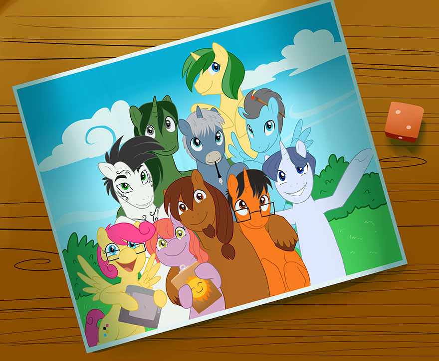
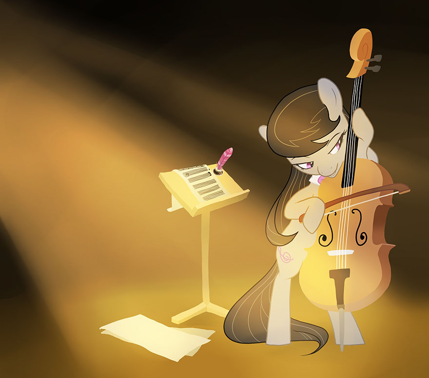
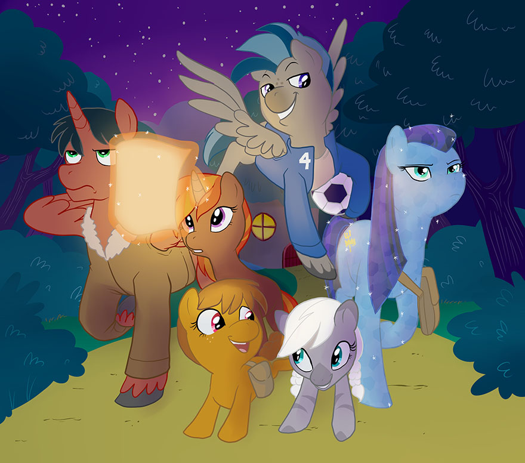
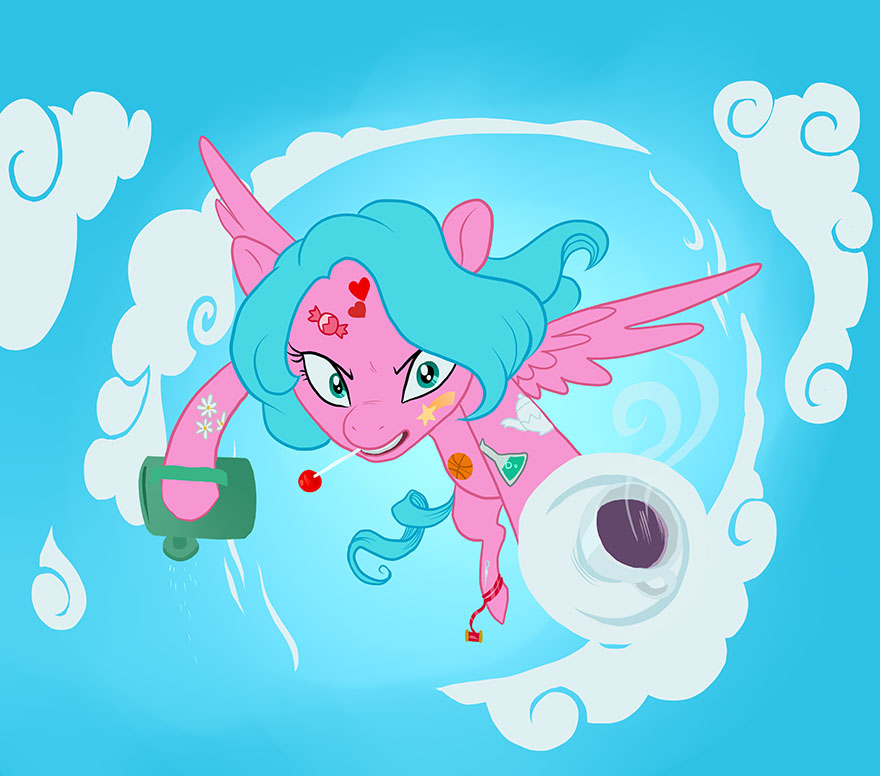
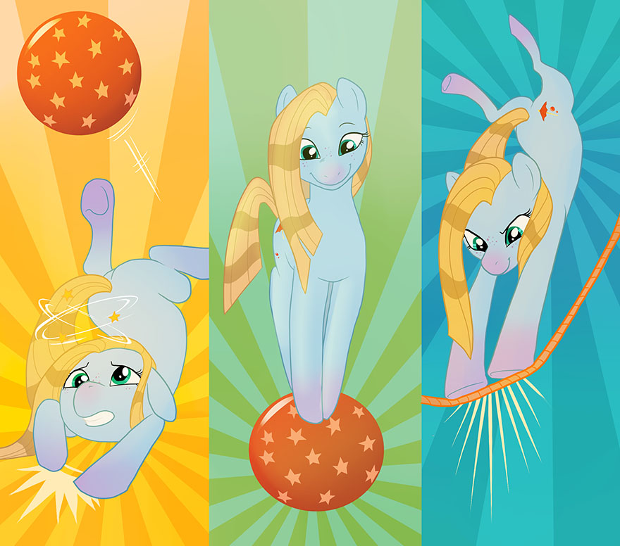
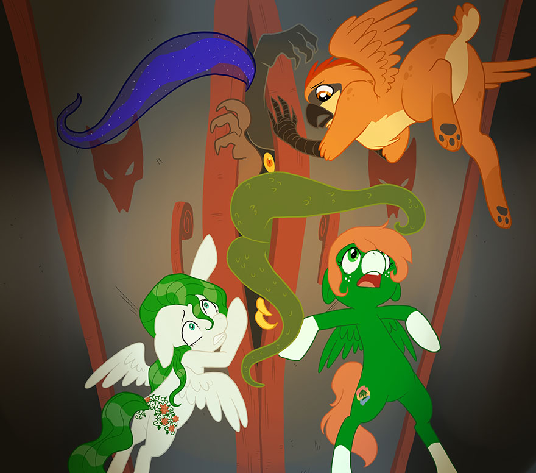

Table of Contents
Front Cover Front Matter Introduction Welcome to Season Four! What You’ll Need to Play How to Read This Book The RiM: S4E Team Character Creation D.A.S.H. Design Aspects Statistics Headway D.A.S.H. Example Playing an Episode Structure of Gameplay Making Checks Advantages & Drawbacks Acting in Harmony Damage, Recovery, & Sidelining Using & Restoring Valor Ending an Episode Character Advancement Learning Lessons Experience Points Purchasing Edges Edge List Library of Edges Magic & Spellcasting Magic Is as Magic Does Creating Spells Casting Spells The Canterlot Archives Running an Episode Being the Game Master Collaborative Storytelling Getting Things Started Checks & Difficulty Targets Damage & Sidelining Lessons & Experience Variant Rules Plot Points Equestria Girls Paragon Ponies Wide, Wide World Epic Experience Encyclopedia Equestria Premade Episodes The House of Enchanted Comics Ars Unicornia Mutants and Maresterminds Whinnystrad Miscellaneous Character Sheet A Note for Developers Updates & Resources Single Page Version (for print)Roleplaying is Magic
Season Four Edition
Front Matter
Production Info
Legal Disclaimer
Roleplaying is Magic: Season Four Edition is a derivative work of art; My Little Pony, My Little Pony: Friendship is Magic, and all established content and characters therein are the creation and property of Lauren Faust, Hasbro Inc., and DHX Media. No copyright infringement, explicit or implied, is intended. Roleplaying is Magic: Season Four Edition is presented for public use and enjoyment on a not-for-profit basis and may not be used for profit without the express consent of Roan Arts LLC and the above-named parties as required by law.
Roleplaying is Magic: Season Four Edition
Copyright © 2014 Roan Arts LLC
All rights reserved.
Production Credits
James Weimer / Tall Tail
Project Lead, Lead Designer, Author
Samuel Hanson / Know-It-All
Concept Development, Design Assistance
Daniel Oakley / Artsy Heartsy
Layout Artist, Web Designer, Technical Lead
Caytlin Vilbrandt / Pixel Prism
Art Direction Lead, Lead Illustrator
Michael Simpson / Sketchbook
Illustrator, Graphic Design Assistance
Shannon McMurtry / Kindle Bright
Community Manager, Illustration Assistance
Casey Hayes / Emerald Dusk
Lead Content Creator
Dominik Makowski / Serious Business
Content Creation Assistance
Matthew Hollatz / Blue Bolt
Vector Artist
Alexis Baker / Silver Lining
Editor, Graphic Design Assistance
Eugene Elzinga IV / Baker’s Dozen
Senior Playtester
S4E Original Character Stable
Lavender, Goggles, Excelsior, Asana, Winter Solstice, Kludge, Plot Twist, Mbaya Ndoto, Sky Sparkler, Stormdancer, Nocturne, Stormsailor, Rising Chaos, Sodium Fizz, Scarlet O’Mare, Skyflower, Magpie, Rumble Riot, Windrose, Snowfield, Mwai, Muzaji, Sadaka, Jacquelin, Gustaff, Rocket, Shiroyuki Hanako, Jellybean, Dream Daze, Lily Heart, Starchild, Crescent, Whistletop, Sugar Dart, Fire Bright, Hemlock, Mad Mare, Dragonheart, Bosstone, Ginger Spice, Pumpkin, Aliella, Zypher, Spindrift, Queen Pegasus, Ruby Blossom, Toybox, Dream Daze, Swift Wind, Baron Von Cirrus, Chaco, Typhoon Wave, Emerald Isle, Gravity, Willow Grove, Hoarfrost, Carronade, Maple Walnut, Barnstormer, Rookwood, Spearmint, Gamble, The Contact, Snapdragon, Thistle Fair, Samantha, Siyana, Tale Chaser, Whirligig, Quintessent Rune
Playtesting Credits
Elena Brutti, Christopher Cifani, Cody Cushenberry, Kyle “Smiley Nimbus” DeTar, Erin Honour, Jeffrey Ly, Anders Mejstrick, Scott Muir, Emmett “Blue Print” Raymond, Felix Shepherd, Hannah Shepherd, Daniel Simpson, Matt Stimac, Dalken Starbyne, Shaun Jacobson, Dennis Venner, Brad Ward, Kestrel Ward, BLame, Colt Flick, Shocklight, Rizae, Cold Snap, Prismatic Flux
Special Thanks
Lauren Faust, Hasbro Inc, DHX Media, Rodger Phillips Marsh (Giftkrieg23), Scott Muir, Kaylin Norman-Slack, Matt Stimac, Ryan Vilbrandt, the whole crew of Everfree Northwest, Equestria Daily, Equestria Gaming, Almafeta, Bronyville, the Bluescreen Bronies, Voice of Equestria, and all our fans, friends, and family over the years. /)*(\
Want More Roleplaying Is Magic?
Visit RiM online at RoleplayingIsMagic.com

Introduction
Welcome to Season Four!
Fillies and gentlecolts, Equestrians of all ages: Welcome to the Season Four Edition of Roleplaying is Magic!
If you’re one of the many returning players who have been with us since the beginning of this project, we’d like to begin by saying thank you. Your love and support over the last several years has been essential in turning this from a humble collection of notes and ideas into one of the Brony community’s most popular and longest-running game projects. We couldn’t have done any of this without you.
And if you’re new to Roleplaying is Magic, we’d like to begin by saying welcome! Sit back and relax; we think you’ll enjoy reading this book and playing this game as much as we’ve enjoyed creating them.
You may be wondering, "Just what is Roleplaying is Magic, anyway?" In a nutshell, Roleplaying is Magic (or "RiM" for short) is a fan-created tabletop roleplaying game and storytelling system based on the My Little Pony: Friendship is Magic cartoon series created by Lauren Faust and owned by Hasbro Inc. With it, up to six players and one Game Master (or "GM") can have adventures in the magical land of Equestria, creating their own stories together and exploring the magic of friendship.
RiM is suitable for a wide variety of gamers, striving for mechanical simplicity to appeal to beginners and immersion-oriented roleplayers, as well as enough depth and complexity to satisfy veteran gamers. It emphasizes positive themes of cooperation, courage, integrity, and self-expression, to provide a meaningful experience in line with the themes and aesthetics of the original cartoon series.
The guiding phrase of Roleplaying is Magic is, "Canon focused, fanon friendly." This means that while we’ve tried to stay as true to the original cartoon series as possible, we’ve also left plenty of wiggle room for game groups to make their experiences unique; to make their Equestria truly their own.
A new edition of RiM has been produced after each season of the original cartoon series, to incorporate revised information presented by the series, as well as improve the design of the game in an effort to make it the best it can be. With this final 'official' version, the Season Four Edition (or "S4E" for short), RiM has never been better. Now even more streamlined and customizable than ever before, S4E blends previous attempts at simplification with robust gameplay mechanics and a focus on positive ethics and morality.
New and returning players alike are encouraged to read through this Introduction chapter to become familiar with the tone and style of the S4E book; however, veteran players (or those who just want to jump right in) can skip ahead to get to the heart of the game’s content.
However you choose to proceed, we hope you enjoy Roleplaying is Magic: Season Four Edition!
What You’ll Need to Play
In comparison to many other roleplaying games, S4E is relatively light in terms of the materials necessary for a group to play. Ideally, a group of players should be able to play an Episode (an adventure) with things you could find in an average home. To play an Episode of S4E, you will need the following:
Some Friends!
S4E is designed to be played with up to six players, who each create a character and control their individual characters’ actions, and one GM, who runs the Episode and brings it to life around the players’ characters, as well as playing the role of any other characters in the Episode.
Four Six-Sided Dice
Each player, as well as the GM, should have four six-sided dice (or "d6’s") to use for attempting character actions and determining the outcome of certain situations. The size and coloring of these d6’s doesn’t matter, and if enough dice aren’t available, S4E can be played with one set for the GM and one for all of the players to share.
Pencils (Or Pens) & Paper
Like any pen and paper tabletop game, there is a certain amount of note-taking and bookkeeping involved in playing S4E; players will need to keep track of their characters’ amount of various types of points and attributes during gameplay.
Character Sheets
Any player who will be controlling a character (everyone except the GM) will need a character sheet to record their character's information on, as well as to keep track of changes and improvements.
This Rulebook
Finally, the group will need this online rulebook for reference and to guide them through certain parts of gameplay.
How to Read This Book
This rulebook is organized into chapters covering major topics, and sections within those chapters which break down each topic into its main points. This allows for easy reference navigation, and intuitive guidance through learning S4E’s mechanics and gameplay concepts.
The best way to read this rulebook is to do so straight through from start to finish; the information within is organized so that each chapter builds upon the chapters before it. After learning the basics of S4E, referencing specific rules and sections can be done during gameplay by using the table of contents in the beginning of the book. This is especially important for Game Masters (GMs), as the Running An Episode chapter of this book relies on knowledge of everything preceding it.
The RiM: S4E Team
At this point, we’d like to take a few moments to introduce the team of crazy ponies behind Roleplaying is Magic: Season Four Edition.
Tall Tail, aka James Weimer, is the project lead and lead designer of Roleplaying is Magic. As an independent game designer, he has been at the helm of the game’s core design and vision throughout each edition, refining and improving it each time as he has acquired and expanded his own skills.
Know-It-All, aka Samuel Hanson, is the co-creator of Roleplaying is Magic. He has served to focus and distill the design of the game for each edition, lending invaluable assistance in helping to develop rough ideas into working core gameplay systems and features.
Artsy Heartsy, aka Daniel Oakley, is the technical lead and web guru for Roleplaying is Magic. Joining the team in the final days of the first edition, he has lent his experience and expertise with programming and scripting to give the game a place on the internet to call home.
Pixel Prism, aka Caytlin Vilbrandt, is the artistic director and lead illustrator for Roleplaying is Magic. Having joined for the game’s second edition, she has been responsible for the beautiful art and layout design which breathes life into the pages of each edition of the game.
Sketchbook, aka Michael Simpson, is an illustrator for Roleplaying is Magic. Joining the team for the game’s second edition, he has used his fine art and animation background to assist in the layout and graphic design of the game’s various materials.
Emerald Dusk, aka Casey Hayes, is the lead content creator for Roleplaying is Magic. Joining the roster for the third edition of the game, he has spearheaded the content creation team in producing a wealth of valuable content; from Spells, to creature information, even to pre-made Episodes.
Serious Business, aka Dominik Makowski, is a content creator for Roleplaying is Magic. Coming aboard for the game’s third edition after being a playtester, he has played an important part in the content creation team’s efforts to convert canon information into usable gameplay resources.
Kindle Bright, aka Shannon McMurtry, is the community manager and general assistant for Roleplaying is Magic. Originally joining for the third edition as an illustrator, she became vital in interacting with the game’s growing community of players.
Blue Bolt, aka Silentmatten (Matthew Hollatz), is the lead vector artist for Roleplaying is Magic. Stepping in for the third edition of the game, he has been instrumental in supplementing the artwork found throughout each edition with clean and well-constructed vector graphics.
Silver Lining, aka Alexis Baker, is the editor for Roleplaying is Magic. Joining the crew for the game’s third edition, she has lent her keen eye and attention to detail to ensure that the ideas and gameplay mechanics of each edition are clearly expressed and articulated.
Baker's Dozen, aka Eugene Elzinga IV, is the senior playtester for Roleplaying is Magic. A long-time player and contributor to the project, he was officially added to the team for the fourth edition of the game, and has been the players’ voice in ensuring it is the best it can be.
Character Creation
D.A.S.H.
Creating a character in S4E can be a detailed process, depending on the type of game you are playing, the level of play your group is starting at, and the amount of experience you and your group have with pen and paper RPG’s. There are many aspects about a character to consider and define during character creation, from the basics of their race and concept, to their attributes and skills, to the unique edges they may choose.
For this reason, character creation follows the acronym "D.A.S.H." to make the whole process linear, easy to follow, and easy to learn for new players. The following sections will walk you through character creation according to this process; but first, a quick explanation of what the letters of the D.A.S.H. acronym stand for.
Design establishes the basic foundation of a character; their Race, physical description, and overall character concept. This serves to inform all subsequent sections of character creation.
Aspects establishes the initial unique parts of a character; the Guiding Element which serves as their core moral principle, and the Fatal Flaw which they may be forced to overcome.
Statistics establishes the major inherent capabilities of a character; their core Attributes, their Fortitude and Willpower to resist harm, and their pool of Valor points.
Headway establishes the capabilities of a character which are gained over time; their set of Skills, the Edges they enjoy the benefits of, and their level of experience.
Design
Race
The first step of character creation is to decide which of the playable Races your character will be.
In S4E, a character’s Race does not grant them any special advantages or restrict their capabilities; all Races have the same basic potential in terms of their Attributes and Skills. A character’s Race does, however, restrict which Edges they are allowed to purchase. Because characters advance solely by purchasing Edges, this can be an important long-term consideration to keep in mind during character creation.
In S4E, there are three core playable Races to choose from. This list can be dramatically expanded (with GM approval) by including all or part of the Wide, Wide World variant found in the Variant Rules chapter of this book. The three core playable Races are Earth Ponies, Pegasi, and Unicorns.
Earth Ponies are one of the three races which migrated from the pony homelands of old and founded modern-day Equestria. They are hard-working and multi-talented, used to cooperating and finding clever ways of solving their problems. Earth Ponies, by and large, are hard-working, forthright individuals who are no strangers to overcoming difficulty with their wits and determination; without the wondrous abilities of the other races, it is important for many Earth Ponies to make the most of their skills, their circumstances, and the tools around them.
Pegasi are a winged pony race descended from a proud warrior society; from their capital in Cloudsdale, many (but not all) Pegasi serve as the guardians of the sky and the shepherds of the weather all across Equestria. Pegasi are gifted with feathered wings, allowing them to develop the ability to fly and to interact with clouds as if they were solid objects--walking on them, and even swimming in them! From their proud heritage, even the most timid Pegasus often has a courageous spirit hiding deep down, waiting to spring to the surface.
Unicorns are a horned pony race hailing from their capital of Canterlot, who are the guardians and practitioners of arcane magic and spellcasting. In days of old, Unicorns were aristocratic and responsible for raising the sun and the moon, but over time they have become just as diverse as any other race. Unicorns are born with a magical horn which allows them to utilize magic and cast Spells if they study and work hard at it; while most Unicorns develop some level of magical ability, it is most often limited to their interests or passions in life.
Description
The next step of character creation is to develop your character’s appearance and physical description.
This can include a variety of things, such as mane and tail color and style, coat / feather color, facial hair (if any), eye color, height and weight, body shape, age, Cutie Mark (if they have one), outfits they typically wear, accessories they keep with them, and any distinguishing marks.
Concept
The next step of character creation is to develop your character’s core concept.
All well-defined characters have three areas in which their concept should be developed: their Background, their Perspective, and their Direction. These three areas have the most influence on how a character is roleplayed, as well as how they develop and grow over time. This informs their advancement and how they view things which are important to the story, such as morality and ideology.
Background: A character’s Background is their personal history; the important events and elements of their life which have made them who they are today. A character’s Background doesn’t need to be completely comprehensive; it is often best to leave a little ‘wiggle room’ to allow new things to be ‘discovered’ about their history as the story progresses.
Perspective: A character’s Perspective is their current outlook on life, usually in general but also specific where the character has specific views and convictions. Often, a character’s Perspective evolves from their Background--how their life has shaped their outlook to the present day.
Direction: A character’s Direction is their aims and goals, both in the long term and the short term. In general, all characters have goals, and these goals often evolve out of their Background and Perspective. A character’s Direction can be widely varied between aspirations (things to achieve) and passions (things to spend time doing).
Aspects
Guiding Element
The next step of character creation is to choose your character’s Guiding Element from the six Elements of Harmony.
Each of the Elements of Harmony embodies a number of concepts and ideals which can inform a character’s personality and outlook on life, helping them to make decisions and react appropriately to situations. However, it is important to note that a character’s Guiding Element does not restrict their behavior in any way; a character has aspects of each Element of Harmony within them, to varying degrees. The one they choose as their Guiding Element is simply the one which they best exemplify, and most strive to uphold.
The most important mechanical reason for a character to strive to embody their Guiding Element is that it provides an avenue for earning points of Valor, which serve many valuable purposes to help characters and groups during an Episode. The six Elements of Harmony are:
Kindness: The Element of Kindness is found in characters who have a deep compassion for others, and an acceptance of others for who they are. A kind character seeks not only to do no harm, but also to heal hurts in others, and nurture them. While they aren’t necessarily as generous, encouraging, or devoted as others might be, a character who embodies Kindness has a deep compassion and empathy for others which most do not. They are more aware of someone’s feelings and well-being, and how their actions--and the actions of others--might affect them. For this reason, a kind character tends to be reluctant to engage in confrontation and might try to stop it before it starts, and would be the first to make peace afterward and take care of those who were harmed.
Laughter: The Element of Laughter is found in characters who are optimistic at their core, and seek to use their positivity and energetic good cheer to make the world a better place. A cheerful character tends to be upbeat and rarely discouraged or fearful; even when things are at their worst, they can find the silver lining in the dark clouds. While they can tend to be odd or appear to not take things seriously, this is often not the case; a cheerful character generally understands the gravity of a situation, but chooses to focus on the positive and fun aspects of it instead of dwelling on the grim and negative. For this reason, a cheerful character tends to be more apt to encourage others than to oppose them; they are more likely to throw a party to try to change someone’s attitude than to argue with them.
Generosity: The Element of Generosity is found in characters who readily make sacrifices for others, giving of their time, effort, possessions, and even opportunity. While Generosity is similar to Kindness, it differs in that while a kind character might nurture someone by making sure that they get the medical care they need, a generous character would absolutely insist on taking care of the person themselves. It’s not enough for a generous character to make sure someone gets something nice or something they need; a generous character has a deep need to make, give, or deliver it themselves, personally. This can get them into trouble by causing them to try to take on too many responsibilities and thus suffer from the ‘weight of the world,’ but it is this theme of personal and dedicated self-sacrifice which is the mark of a generous character.
Honesty: The Element of Honesty is found in characters who focus on personal integrity, responsibility, and straightforward morality. An honest character is more than simply someone who doesn’t tell lies (in fact, they may lie if it serves a higher sense of responsibility); they have an ‘honest heart,’ and try to be dependable in all aspects of their life. An honest character usually has very strong self-discipline, and firm convictions in what they think is right or wrong; they rarely (if ever) cheat, even against their enemies. To an honest character, a commitment they have made is a sacred duty--an oath or vow that they must fulfill at any cost and by any means necessary. This can lead to an honest character being blind to the assistance others can offer, as they focus on their own personal responsibility and how important it is to their ‘honest heart’ that they make good on their promises. But it is this dependability and firm moral core of steadfast integrity which defines an honest character.
Loyalty: The Element of Loyalty is found in characters who place immense value on those who they consider important, and choose those friends over others--and even themselves. A loyal character desires value and acceptance from their friends, and regularly does things in service to their friends which they do not--or cannot--do in service to others. While a loyal character shows aspects of the other Elements in the things they do, they usually show them more when serving their friends. While they might help others and reap the glory for themselves, when helping friends they are likely to do so even to their own detriment. This is the difference between a loyal character and anyone else: a loyal character will push themselves far beyond the lengths they would normally go to when they do so out of loyalty to those they care about.
Magic: The Element of Magic is found in characters who approach the world with an outlook of idealism, faith, and wonder, and strive to see what makes all things special. A wondrous character focuses on the unique and the important, looking for what makes each pony, each situation, each experience, ‘magical.’ Often, a wondrous character tends to have an innocent, even naive, outlook on life; they have an optimism which is similar to (but more restrained than) a cheerful character’s. A wondrous character approaches situations with a unifying faith in the world around them and their friends, and more often than not, it is they who more readily see the ‘magic’ of friendship for what it truly is.
Fatal Flaw
The next step of character creation is to work with your GM to develop your character's Fatal Flaw.
All characters have a Fatal Flaw. A Fatal Flaw is a personal weakness; a mental, emotional, or moral trait that they struggle to cope with, or (if the GM allows) a physical handicap which reasonably hinders the character in their daily life. For example, a good Fatal Flaw for a character might be that they are a perfectionist, or are afraid of danger, or are a little too controlling. Another might be having weak wings, or poor eyesight. Whatever your character's Fatal Flaw is, it must be approved by your GM, to ensure that it fits the tone and theme of the Episode your game group is playing.
The mechanical impact of your character's Fatal Flaw is that whenever your character's Fatal Flaw reasonably and meaningfully applies to a task they are attempting, they must perform that check without the benefit of their Attributes (this is explained in greater detail in the Playing An Episode chapter of this book). In addition, when a character succeeds at accomplishing a goal despite being meaningfully hindered by their Fatal Flaw, or when a character takes on a meaningful challenge which forces them to confront their Fatal Flaw, the GM may choose to restore a point of Valor to that character (Valor is explained in more detail later in this chapter).
Statistics
Attributes
The next step of character creation is to familiarize yourself with the three Attributes which will form the basis of checks and tasks your character attempts to perform, as well as determining their ability to resist harm, and the degree of their inner courage which they can summon for a variety of purposes.
There are three Attributes in S4E: Mind, Body, and Heart. A new character is created with all three Attributes beginning with a score of 1.
Attributes can be improved by spending Experience Points to purchase certain Edges (Experience Points and Edges are explained in more detail in the Character Advancement chapter of this book).
Mind: The Mind Attribute represents a character’s intellect, reasoning, problem-solving ability, logic and analytical ability. It also represents their memory and knowledge: how much they can remember and how much sheer information they have access to. Finally, it represents their perception and senses: how well they see, hear, smell, taste, feel, and notice about those senses. Characters with a high Mind score tend to be all-around clever, intellectual, and perceptive characters. They approach situations intelligently and rationally, and notice things others do not. They are likely to find solutions nopony else has thought of, and remember important facts no one else did. They are often natural leaders, but can also be some of the best advisors and educational characters in any group of friends. Mind is an important Attribute for characters who cast Spells and use magic, as well as characters who want to focus on having a high pool of Willpower to resist mental and emotional harm.
Body: The Body Attribute represents a character’s muscular strength and power, as well their toughness, stamina, and ability to resist injury and fatigue. It also represents their speed, quickness, reaction time, and overall swiftness. Finally, it represents their agility, dexterity, flexibility, and bodily coordination--their ability to maneuver and move gracefully. Characters with a high Body score tend to be stout, strong, athletic, and fast characters. They approach situations with a mentality of being ready for hard work, and are undaunted by difficulty. They are likely to succeed in a clinch, and can usually be depended upon to accomplish any physical task set before them. They are often the go-to characters in many situations, and can be some of the most relied-upon characters in any group of friends. Body is an important Attribute for characters who are athletic or adventurous, as well as characters who want to focus on having a high pool of Fortitude to resist physical harm.
Heart: The Heart Attribute represents a character’s charm and force of presence: their charisma, determination, and bearing. It also represents their sensitivity, empathy, compassion, care, and ability to connect with other creatures. Finally, it represents their creativity and artistic expression. Characters with a high Heart score tend to be strong-willed, compassionate, charismatic characters. They approach situations from their own perspective, and often help avert disaster with their personalities. They are likely to make friends and allies with the most unexpected creatures and characters. They are often supporting characters in most situations, though when they see what must be done, they can become a rallying force in any group of friends. Heart is an important Attribute for characters who are social or artistic, as well as characters who want to focus on having a high pool of Valor points to spend on a variety of unique abilities.
Fortitude & Willpower
The next step of character creation is to calculate your character’s Fortitude and Willpower scores, as well as familiarize yourself with how Fortitude and Willpower are important to a character.
Whenever a character is exposed to a source of harm, whether physical or mental / emotional, they lose points of Fortitude, Willpower, or both. If they run out of points of either, they become Sidelined, or temporarily defeated (damage, recovery, and Sidelining are explained in more detail in the Playing An Episode chapter of this book).
Fortitude represents a character’s fitness and endurance, as well as their resistance to physical harm, wounds, and injuries. Whenever they are physically injured, a character takes damage by losing points of Fortitude.
Fortitude is calculated from a character's Attributes as: (Body x 10) + (Heart x 5). As a character’s Body or Heart scores change, their Fortitude changes as well.
Willpower represents a character’s self-esteem and determination, as well as their resistance to fatigue and mental / emotional harm. Whenever they are discouraged or scared, a character takes damage by losing points of Willpower.
Willpower is calculated from a character's Attributes as: (Mind x 10) + (Heart x 5). As a character’s Mind or Heart scores change, their Willpower changes as well.
Valor
The next step of character creation is to determine your character’s starting and maximum Valor score, as well as familiarize yourself with what Valor is and why it is important to a character.
In Equestria, the genuine integrity, compassion, selflessness, and courage of an ordinary pony can turn them into a hero, allowing them to face down even the greatest dangers. Those who strive to make the world a better place and do the best they can to do the right thing often find that they have a great inner strength to draw from. Characters in S4E have a pool of Valor points to represent this effect.
Characters begin each play session, and each Episode, with an amount of Valor equal to their Heart score, regardless of the amount they had remaining at the end of any previous play session or Episode; in effect, Valor resets to the character’s maximum each time the player group sits down to play, as well as each time they begin a new Episode.
Characters may spend a point of Valor at any time during gameplay to restore 1d6 points of lost Fortitude and Willpower to themselves or any one of their friends. In addition, Valor may have other uses and effects based on the Edges a character has purchased.
As they play, characters may restore points of Valor they have spent (up to a maximum equal to their Heart score) by carrying out heroic, courageous, and / or virtuous actions or decisions at the GM's discretion. Characters don’t even necessarily have to succeed at these moral actions; often enough, making the decision to do what’s right as opposed to what might be easier is enough. In fact, one of the most reliable ways for a character to restore points of spent Valor is to act in a way which embodies their Guiding Element whenever possible.
At the GM's discretion, characters who show apathy or disregard toward those they might reasonably help, or who take advantage of others, or who act unfairly or with cruelty, or who otherwise behave in a knowingly immoral or unjust way, may have points of Valor taken away from them during gameplay to reflect the inner toll such actions take on a character.
Headway
Skills
The next step of character creation is to familiarize yourself with Skills.
All characters have a set of Skills; knowledge they learn and training they pick up over time. Like all aspects of character advancement, gaining and improving Skills is handled through spending Experience Points to purchase the appropriate Edges, but it is important to first understand the general importance of Skills to a character.
Whenever a character attempts an action and the GM asks them to make a check, the check is always based on one of the character’s Attributes. However, there is a limit to how well a character can do without some kind of training, even if they have very good Attributes. Having appropriate Skills to apply to a check a character is attempting helps the character improve their chances of success.
There is no pre-set list of Skills in S4E; instead, Skills are created by players and the GM as they are purchased for a character. In this way, each character's list of Skills may be unique, based on the Skills their player purchases and works with the GM to create and define. A general rule-of-thumb for creating a Skill is that it should pertain roughly to the same amount and scope of knowledge as an introductory high school or college class (for example, "Biology," "Chemistry," and / or "Physics" instead of just "Science").
Edges
The next step of character creation is to familiarize yourself with Edges.
Edges are unique features and special qualities which help to set characters apart from one another and make them special; whether by establishing some narrative or personal aspect of the character, improving some quality about them (such as Attributes), awarding and improving Skills, applying bonuses to certain kinds of checks they make, or by altering the rules as they apply to the character.
It is important to note that characters' basic Racial powers (such as flight or magic) are represented by Edges which they have access to because of their Race, but characters do not automatically gain these Edges; they must be purchased like any other Edge in order to gain their benefits.
Some Edges are restricted to certain Races, or require having other Edges first, before they can be taken. Additionally, a few Edges can be purchased multiple times; otherwise each Edge can only be taken once. All Edges cost a certain amount of Experience Points to purchase.
Edges are the primary method of character advancement; simply put, characters in S4E advance by gaining Experience Points and spending them to purchase Edges.
Experience
The final step of character creation is to check with your GM to find out how many Experience Points the characters in your group have to spend on purchasing Edges, and then to purchase Edges by spending those Experience Points. More detailed information on spending Experience Points and purchasing Edges, as well as the complete list and library of Edges in S4E, can be found in the Character Advancement chapter of this book.
Your GM may decide not to make up their own amount of Experience Points the characters in your group begin with, and may instead use one of S4E’s pre-set totals, reflecting a general starting point (or “tier”) for the characters in your group. S4E’s pre-set Experience Point tiers by no means reflect all possible heights a character can achieve, only a few suitable starting points for characters being played in various types of games. These tiers, and their pre-set Experience Point totals, are:
Youth (30 Experience Points) - The Youth tier is suitable for characters who are meant to encounter fairly easy challenges with low stakes. This tier is best for helping children and beginners to become familiarized with the game.
Adult (60 Experience Points) - The Adult tier is suitable for characters who are meant to be established in the world, but are not anything special yet. This tier is best for a humble starting point, and for playing slice-of-life games.
Veteran (90 Experience Points) - The Veteran tier is suitable for characters who are meant to be somepony special, with adventures under their belt. This tier is best for playing games with a theme of adventure and some heroic action.
Heroic (120 Experience Points) - The Heroic tier is suitable for characters who are meant to be heroes of Equestria, counted on by others. This tier is best for playing high-stakes games with thrilling, ‘saving the world’ heroics.
D.A.S.H. Example
Here you will find a step-by-step example of character creation, using S4E's D.A.S.H. process, to help new players understand how it works. In this example, our player 'Tom' will create his S4E character, 'Thrifty' – a humble and simple pony who just might have the makings of a hero.
D - Design
Race: The first step of character creation is for Tom to decide what Race his character Thrifty will be. He decides that Thrifty will be an Earth Pony, as their hard-working, hooves-on nature best suits his idea for Thrifty.
Description: The next step is for Tom to describe Thrifty. Tom decides that, like himself, Thrifty is pretty average; average height, a generally average build, unremarkable tan coat, short brown mane and tail, and hazel eyes--an everyday citizen of Equestria. He also decides that Thrifty is a quintessential tinkerer, always fixing up old things; because of this, Thrifty is always a little covered in dust, and also always carries a saddle bag full of 'tinkering tools' and small spare parts around with him. Tom decides Thrifty is usually friendly and relaxed, with a 'can-do' attitude.
Concept: The next step is for Tom to define Thrifty's core concept, with his Background, Perspective, and Direction. Tom decides to keep Thrifty's Background simple; the youngest of a big family, he had an interest in repairing old things from an early age, so he eventually moved to his new home to open a general repair shop. This feeds into his Perspective; Thrifty hasn't gotten enough money together to start his shop yet, so he is always on the lookout for work that needs to be done. This gives him his friendly, can-do attitude; he's always willing to help out and mend what's been broken. This, in turn, feeds into his Direction; Thrifty wants to help ponies with the simple things in their lives which need fixing. He has no grand aspirations of being a hero and saving Equestria, he's simply willing to work hard to help make everypony's life a little better in his own small way. (Of course, it is this quiet and humble virtue which might one day make Thrifty into one of Equestria's heroes…)
A - Aspects
Guiding Element: The next step is for Tom to decide which Guiding Element is the one which best matches who Thrifty is. This, thanks to the previous section of character creation, is an easy task for Tom; Thrifty obviously best matches the Element of Generosity. He could also match Kindness, as the two are similar in some ways; but after talking with his GM, Tom decides that Generosity is better because Thrifty wants to have an active part in doing good work--he wants to be 'hooves-on,' so to speak. Following this ideal and striving to embody it, especially when it is difficult to do so, will help Thrifty regain spent Valor during gameplay.
Fatal Flaw: The next step is for Tom to determine what Thrifty's Fatal Flaw is. After taking some time to consider who Thrifty is as an individual, reviewing the past sections of character creation for reference, and talking with his GM, Tom decides that because Thrifty works on mending broken things and fixing up old things which have worn out, his Fatal Flaw is that Thrifty has a hard time letting go of things, whether material things, situations, problems, or other ponies. This makes Thrifty hesitant to change or give up on something, and that can lead him into trouble. During gameplay, whenever Thrifty is faced with a dilemma which plays on his Fatal Flaw, he will make checks without the aid of his Attributes.
S - Statistics
Attributes: The next step is for Tom to read and learn Thrifty's three Attributes: Mind, Body, and Heart. Each of these Attributes will begin with a score of 1 for now, and Tom will have the opportunity later on in character creation to improve them through purchasing the appropriate Edges.
Fortitude & Willpower: The next step is for Tom to understand Thrifty's Fortitude and Willpower scores, and calculate their initial values. His Fortitude is calculated as (Body x 10) + (Heart x 5), and his Willpower is (Mind x 10) + (Heart x 5). Because all of his Attributes are currently at a score of 1, both his Fortitude and Willpower scores are currently 15. This may increase later in character creation depending on the choices Tom makes for Thrifty.
Valor: The next step is for Tom to learn about Valor, and to determine Thrifty's starting and maximum Valor score. Thrifty's Valor score is equal to his Heart Attribute, which is currently 1, meaning Thrifty's Valor is also currently 1. This may increase later as character creation continues.
H - Headway
Skills: The next step is for Tom to learn about Skills. While Thrifty does not begin with any Skills by default, he may acquire them depending on the choices Tom makes later on as character creation continues.
Edges: The next step is for Tom to learn about Edges. Like Skills, Thrifty does not begin with any Edges by default, but he may purchase them later in character creation by spending Experience Points (XP). Edges are the primary way in which Thrifty will gain power, ability, and knowledge.
Experience: The final step is for Tom to put all of his knowledge and conceptualizing of Thrifty to use by spending Experience Points (XP) to purchase Edges to improve Thrifty's capabilities. He finds out from his GM that Thrifty (like all of the characters in Tom's game group) starts in the Adult tier of experience, which gives him 60 XP to spend on Edges to advance his character. The following is how Tom spends Thrifty's starting XP:
- Gifted (5 XP): Thrifty purchases this Edge to increase his Mind score from 1 to 2, and subsequently increases his Willpower from 15 to 25 (+10).
- Gifted (5 XP): Thrifty purchases this Edge to increase his Body score from 1 to 2, and subsequently increases his Fortitude from 15 to 25 (+10).
- Gifted (5 XP): Thrifty purchases this Edge to increase his Heart score from 1 to 2, and subsequently increases both his Fortitude and Willpower from 25 to 30 (+5 each). The Heart increase also increases his Valor from 1 to 2.
- Improved Gifted (10 XP): Thrifty purchases this Edge to increase his Mind score from 2 to 3, and subsequently increases his Willpower from 30 to 40 (+10).
- Improved Gifted (10 XP): Thrifty purchases this Edge to increase his Heart score from 2 to 3, and subsequently increases his Fortitude from 30 to 35, and his Willpower from 40 to 45 (+5 each). The Heart increase also increases his Valor from 2 to 3.
- Skill Training (5 XP): Thrifty purchases this Edge to reflect his training and skill in repairing things. Tom works with his GM to describe and define the details of this Skill, and they call it "Repair." Thrifty will roll an extra 1d6 when he makes a check to which Repair would apply, and he will choose the best two d6 results to add to the check.
- Improved Skill Training (10 XP): Thrifty purchases this Edge to reflect his more advanced training and skill in repairing things. He chooses his "Repair" Skill, and applies this Edge to it. Thrifty will now roll an additional extra 1d6 (for a total of 2d6 extra) when he makes a check to which Repair would apply, and he will choose the best two d6 results to add to the check.
- Special Purpose (5 XP): Thrifty purchases this Edge to reflect that he has gotten his Cutie Mark. Tom works with his GM to define Thrifty's special purpose as, "To mend the broken." They also determine that his Cutie Mark is a wrench and a screwdriver, crossed over each other. Whenever Thrifty's special purpose applies to a check he is making, he will ignore any and all Drawbacks he might otherwise suffer for that check.
- Talented (5 XP): Thrifty purchases this Edge to reflect his inherent talent with using the materials available, instead of having to rely on specialized tools, to get the job done. Tom works with his GM to describe and define this Talent, and they call it "Resourceful." Whenever Thrifty makes a check to which this Talent applies, he gains a +1 bonus to his check result.
With the final step of character creation complete, Tom has finished creating Thrifty, and the handy-pony is ready for his first Episode!
Playing an Episode
Structure of Gameplay
S4E is designed to be easy to play, with a loose structure of rules meant to appeal to beginner and ‘freeform’ roleplayers and to encourage collaborative storytelling. There are six important terms to learn and remember, and these are: Theater of the Mind, Scenes, Narrative Mode, Cinematic Mode, Rounds, and the “P.I.E.” acronym. In this chapter, each of these terms and how they govern gameplay will be explained.
Theater of the Mind
S4E falls within the genre of ‘collaborative storytelling’ games, which is more loosely-governed than other game types in terms of exactly what a character can and cannot do. This means that S4E is played primarily with the group’s imagination and interpretation, and with secondary materials (such as grids, maps, tables, charts, and exact measurements of range, damage, movement speed, etc) having less of an impact on moment-to-moment gameplay. This style of play is relatively subjective and fluid when compared to other games in the RPG genre, and is best described with the term Theater of the Mind.
Scenes
Individual parts of an Episode of S4E can be separated into Scenes, which are distinct sequences of action and narrative revolving around a central plot point. Scenes can be identified by considering an Episode of S4E as if it were an episode of the original cartoon: they could be anything from “talking to ponies around town to find information,” to “confronting the hydra,” to “traveling through the forest.” Many parts of S4E revolve around the concept of Scenes, and it is thus important to approach gameplay with Scenes in mind.
Narrative Mode
Scenes in S4E are separated into two types: Narrative Mode and Cinematic Mode. A Narrative Mode Scene is a Scene in which timing isn’t necessarily important. It is the ‘exploration’ mode of the game. For example, when going around town looking for clues, or searching a cave for a secret door, or traveling through the forest, the moment-to-moment timing of the game isn’t very important. Thus, those are all Narrative Mode Scenes. Narrative Mode is fast and loose, with the GM and the players working together to tell the story, and the GM keeping things organized without needing to take gameplay into the more ordered Cinematic Mode.
Cinematic Mode
The other type of Scene in S4E is Cinematic Mode. A Cinematic Mode Scene is a Scene in which timing and bookkeeping of numbers are more important, and often one in which when danger or threat is a focal point of gameplay. For instance, Cinematic Mode comes into play when the players’ characters are facing an adversary or handling a tense or difficult situation like a sporting competition or escaping from Ahuizotl’s latest series of traps. A Cinematic Mode Scene is played out in a sequence of Rounds, with a uniform order of action and reaction that is repeated from Round to Round.
Rounds
Rounds are the most organized gameplay structure in S4E, and are meant to be used when a lot of action is taking place – often in response to danger, difficulty, or threat. Rounds are useful in that they allow the GM and the players to keep track of everything going on in the correct order by making the potentially chaotic narrative of the story adhere to a linear progression of action and reaction each Round. This progression is abbreviated into the acronym “P.I.E.”
P.I.E.
P.I.E. stands for “Presentation, Initiative, Effects.” It is the formula of steps for resolving each Round of a Cinematic Mode Scene. The following will describe each step in detail, and give examples of P.I.E. in action.
Presentation: First, the GM will present the scene (or continue the scene from the previous round), with a brief piece of narration, and, if necessary, will present a challenge. For example:
“You enter the dark banquet hall, moonlight hidden by old, heavy curtains. Cobwebs and dust lie heavily over the long table and old chairs. However, after taking a few steps, the candles and the fireplace suddenly spring to life, flame flaring to life and illuminating the hall--and the cloaked figure seated at the head of the table. “I am pleased you could join me for dinner,” he says, “I have been hungry for so long, and you look so delicious...” From the rafters, a swarm of bats come screeching down toward you, flapping their leathery wings as they attack!”
Initiative: Next, the GM will call for reactions from selected characters, followed by actions from everyone. First, those characters who the GM decides are entitled to reactions get to take a short, often defensive, action (for example, a reaction may be to dodge out of the way of a falling tree, or to make a reply to an insult directed at them). The reacting characters may act in any order they choose, sharing one group ‘turn’, and all of the characters’ reactions are resolved at once, with the results being interpreted by the GM accordingly. If they can’t cooperate to decide on their own action order, the GM may decide they’ve lost their chance to react due to bickering. Usually, only characters who are directly affected by some part of the scene presentation are entitled to a reaction, though this is left up to GM discretion. For example:
The GM decides that only three members of the group are in direct danger of attack from the bat swarm, and so calls for reactions from them. Two characters try to dodge out of the way, and one tries to blind the bats with a flash of magical light. The GM resolves all of the reactions, and decides how the combined reaction plays out. One of the dodging characters succeeded, but the other failed – but the character who tried to blind the bats succeeded! The GM decides that the blinding light prevents the bats from harming anyone for the moment, and thus the light-wielding character’s reaction ‘saved’ the failed dodging character as well.
After reactions have been resolved, the GM will call for everyone to make a single action. This action can be more complex than a reaction, but still usually only takes a few seconds; the GM and the players should work together to make sure that a given action is neither too short, nor too long, based on the scene at hand. Actions are taken in any order the players choose, and are resolved individually (not as a group, as reactions are). Just as with reactions, if the players cannot work together to decide action order, the GM may rule that they’ve lost their opportunity. Characters who choose to act in Harmony with a fellow character are counted as acting at the same time as the character they are acting in Harmony with (acting in Harmony is explained in more detail later in this chapter). For example:
The characters, with a brief reprieve from the bat swarm, decide to take the offensive. A Pegasus tries flying in a circle to summon a small tornado to trap the bats while the others confront their mysterious adversary. It works, and the bats are kept busy in the cyclone. The other characters confront the cloaked figure. One steps forward, and all the others act in Harmony with the group leader, backing them up as they demand that he tells them his name, and where he’s taken Princess Luna!
Effects: Finally, the GM will narrate any extra effects that either occur as a result of the characters’ actions over the course of the round or that should be highlighted for the players’ benefit. This is a ‘clean-up’ step, and may be skipped if the GM decides to move on to the next round instead. For example:
As the characters confront their mysterious adversary, the bats, confused by the tornado, seem to break out of a magical trance they’ve been kept under and no longer seem hostile.
With the Effects step complete, this Round ends and a new Round begins with its Presentation step.
Making Checks
Checks are the backbone of character actions in S4E. Any time a character attempts a task, the GM may require that they make a check to determine if they were successful or not. In general, easy tasks, or tasks with little-to-no narrative significance, can be resolved without requiring a check; however, most tasks a character attempts which impact the story are good candidates for checks. Checks are also used to determine the victor in a directly opposed action or a competition between characters.
This section will explain how to perform the three types of checks: Standard, Opposed, and Competitive.
Standard Checks
When making a check, a higher result is desirable, as the total of a check is compared to a target difficulty number to determine the check's outcome. To make a standard check, perform the following steps.
- Step One: Describe the action your character is taking, and work with your GM to decide which Attribute is being used for the check. Add that Attribute's score to the check total. If the GM decides that your Fatal Flaw applies to the check, however, skip this step. When your Fatal Flaw applies to a check, you perform that check without the benefit of your Attributes.
- Step Two: Roll 2d6, plus a number of additional d6's if you have an applicable Skill, according to the Edges you have purchased for that Skill. Take the highest two results as the roll for the next step.
- Step Three: Apply the effects of any Advantages and Drawbacks to the roll (Advantages and Drawbacks are explained in more detail later in this chapter), and add the adjusted roll result to the check total.
- Step Four: Add any bonuses awarded by Edges to the check total, make use of any Edges you can use and decide to use, and give the check total to the GM to find out what happened.
For example, Royal Blue, a young Pegasus, is crossing a rope bridge over a deep ravine and is attempting to leap across a section where the old wooden planks have fallen away.
- Step One: She determines with the GM that the leap will be a Body check. Having a Body score of 2, she thus gains +2 to the check total. If her Fatal Flaw "social anxiety" had applied, she would skip this step; because it doesn't, however, she gains the +2 as normal.
- Step Two: She has the Skill "Gymnastics" which the GM agrees applies to the check. She is entitled to roll 2d6, as everyone is when making a check. Because of the Edges she has which pertain to her "Gymnastics" Skill ("Skill Training" as well as "Improved Skill Training"), she is entitled to two additional d6's (one from each Edge). She rolls the total (4d6), and gets results of 2, 3, 4, and 5. She takes the 4 and the 5 (total 9), being the two highest results.
- Step Three: The GM decides that the swaying of the rope bridge adds one Drawback to this check, which will reduce the check's total roll by one step. In this case, the roll--determined by the previous step--was a 9. The Drawback reduces this by one step, making the 9 into an 8. She thus gains +8 to the check total, bringing it up to 10 total.
- Step Four: Royal Blue is a Pegasus, and has previously purchased the "Wing Power" and "Improved Wing Power" Edges (each granting a +1 bonus when her wings are used to aid in a check). She is, of course, using her wings to aid her jump; because of these two Edges, she thus gains a +2 to the check total accordingly. This brings the check total up to 12. She gives this result to the GM to find out what happens.
Opposed Checks
Sometimes, characters may attempt tasks which are directly opposed to one another; for example, playing tug-of-war, having a race, or hoof-wrestling would all be opposed checks. In those cases, simply follow the steps for a standard check, except that in Step Four, whichever character has the highest check total succeeds at the opposed check (i.e. winning the tug-of-war, race, hoof-wrestling match, or whatever else was at stake, as interpreted by the GM). The other character fails at the opposed check.
Competitive Checks
Sometimes, characters may attempt tasks with the intent to outperform one another; for example, two teams each trying to produce more cider than the other would be a competitive check. In these cases, it becomes important not just to see who performed better, but also to make sure that the involved characters both succeeded in the first place.
This kind of competitive check is a combination of a standard check and an opposed check, in that the characters involved must first succeed at the Difficulty Target set by the GM, and then their results are compared to decide who performed the best. Only the character who succeeds against the Difficulty Target of the task and outperforms their opponent(s) is counted as having succeeded at the competitive check; all others fail the competitive check.
Advantages & Drawbacks
All positive and negative modifiers to checks (such as using an appropriate tool, or conversely, suffering from a disadvantageous condition) are represented by the GM applying Advantages and Drawbacks to the check's 2d6 roll result. A check may have any number of Advantages and Drawbacks.
Advantages and Drawbacks first cancel each other out. For example, if a character has two Advantages and one Drawback on a particular check, they effectively have one Advantage (as one Advantage and one Drawback cancel each other out, leaving one Advantage remaining).
Advantages increase the 2d6 result by one step, up to the maximum possible 2d6 result (12).
Drawbacks decrease the result of the 2d6 result by one step, down to the minimum possible 2d6 result (2).
For example, if a character has a 2d6 roll of 10 with three Advantages, they can only increase the result by two, up to 12 (effectively 'wasting' the third Advantage; it would have increased the result to 13, which is above the highest possible 2d6 result, and is thus disregarded). By the same token, if a character has a 2d6 roll of 3 with two Drawbacks, they can only decrease the result by one, to 2 (effectively 'negating' the second Drawback; it would have decreased the result to 1, which is below the lowest possible 2d6 result, and is thus disregarded).
It is important to consider the approach characters take to each individual Scene, as past actions in a Scene can add Advantages and / or Drawbacks to future checks. In this way, the tactics and strategy employed by a group of characters can help or hinder them as a Scene progresses.
Acting in Harmony
When characters work together on the same check, they are acting in Harmony. Acting in Harmony can allow a group working together to accomplish something that no single member of that group could accomplish on their own.
Characters acting in Harmony are considered to be a single character for the purposes of the check, and use the best possible elements of each involved character to try to achieve success. For example, a group of characters acting in Harmony might use one character's Attribute score, another character's Skill, and an Edge possessed by a third character.
Characters acting in Harmony do not 'stack' any aspects of their characters; they instead choose the best available options for making the check.
For example, if two characters acting in Harmony have the same Edge granting a +2 to the check, they do not get a total of +4; they only get the single +2 bonus. In addition, any abilities which override or upgrade a certain benefit (such as one Edge awarding a +1, and its "Improved" version upgrading that bonus to a +2) only award the highest benefit (instead of gaining +1 and +2, the characters acting in Harmony only gain the +2 for the "Improved" Edge).
When a group of characters attempts a check and are acting in Harmony, they designate one character to be the leader for the purposes of the check. This character is the one who actually makes the check (rolling the d6's). However, when this leader rolls the d6's of the check, they add a +1 bonus to the check result for each character acting in Harmony, including themselves.
For example, four characters are acting in Harmony for a check. They decide on a leader for the check. The leader makes the check as the 'combined character' of all four participants, and also adds +4 to the check result (+1 for each character acting in Harmony; four participants yields a +4 bonus) above and beyond what the 'combined character' would normally be entitled to.
If, for any reason, characters acting in Harmony are dealt damage, they may split up the damage as they choose amongst themselves. In addition, if they spend Valor, any character who is acting in Harmony may spend the Valor (for example, if an Edge one character has requires Valor to use, another character acting in Harmony with them may spend their Valor to allow the use of that Edge).
Damage, Recovery, & Sidelining
Danger to characters in Equestria can come from all angles, be it from a monster attacking from the Everfree Forest, to a bully in Ponyville who just won’t leave them alone. Because of this, characters may take damage to both their physical and emotional state, and damaging either one may be enough to ‘Sideline,’ or temporarily defeat, a character. The toughest soldier may be emotionally sensitive, and the strongest will may come in a physically frail body. This section will explain how characters are harmed, what happens to them as a result of being harmed, and how they recover.
Taking Damage
Dangerous situations can lead to characters taking damage to their Fortitude and Willpower, through physical harm (for Fortitude) or mental / emotional harm (for Willpower). The GM determines the type and severity of the harm being inflicted, which yields a formula for calculating the inflicted damage.
For example, a character doesn’t manage to get out of the way of a charging buffalo. The GM determines that the buffalo hitting the character inflicts ‘Heavy’ physical harm, which is (2d6 + 8) damage to Fortitude. When it is rolled, the results are 3 and 5, plus 8, for a total of 16.
Recovering With Valor
As long as a character’s Fortitude and Willpower totals are above zero, they can spend Valor to recover lost Fortitude and Willpower, up to their maximum. This may be done as either a reaction or an action during a round of Cinematic Mode gameplay, or at any time during Narrative Mode gameplay. In addition, multiple points of Valor may be spent at a time. For every point of Valor a character spends, they recover 1d6 of their own Fortitude and Willpower, or allow a friend to recover 1d6 Fortitude and Willpower. In this way, characters may use Valor to maintain their own levels of Fortitude and Willpower, or may help a friend in need avoid dropping to zero.
For example, a character who has dropped to 5 Fortitude out of their maximum may, by spending 3 points of Valor, recover 3d6 Fortitude and Willpower. They might also have spent 3 points of Valor to recover 3d6 of a friend’s Fortitude and Willpower, or may split the expenditure as 2 points for 2d6 Fortitude and Willpower for themselves and 1 point for 1d6 Fortitude and Willpower for their friend.
Being Sidelined
When either of a character’s Fortitude or Willpower totals reach zero, the character becomes Sidelined, and cannot recover from being Sidelined unless an effect is used which specifically says that they recover from being Sidelined. A Sidelined character cannot take normal actions, and is effectively ‘out of action’ for the duration of a Scene. The only actions a Sidelined character can take are ones granted via Edges (for example, the "Second Wind" Edge allows a character to recover from being Sidelined once per Scene) – otherwise, the GM controls the character until they decide to return control to the player, or until the Scene is over. A character becomes Sidelined according to the situation at hand and whether Fortitude or Willpower was reduced to zero.
For example, a character participating in a joust who runs out of Fortitude might be knocked out or exhausted, whereas a character who is facing a scary monster and runs out of Willpower might be forced to run away in fear. Either are appropriate examples of being Sidelined.
If all characters are Sidelined, the GM may declare that the game is over, or may take the story in a different direction. Being Sidelined isn’t always the end; it may allow for characters to be captured, or for other events to occur in the story while everypony is temporarily incapacitated.
After-Action Recovery
The GM may, after a dangerous Scene is over, restore all Sidelined characters to being actively playable, as well as restoring them to 1 Fortitude and Willpower and get them ‘back on their feet,’ so to speak. In addition, a character may have all (or some, at the GM’s discretion) of their lost Fortitude and Willpower restored by resting, relaxing, or otherwise engaging in ‘focused recovery’ between dangerous Scenes or as a result of other events, at the GM’s discretion.
For example, after the dragon has been sent on its way from Equestria, the GM rules that the Scene is over, and the four characters who were Sidelined are restored to 1 Fortitude and Willpower and recover from being Sidelined. After returning to town, the group takes the opportunity to relax together from their adventure, and the GM rules that this ‘focused recovery’ restores everyone to full Fortitude and Willpower.
Using & Restoring Valor
Valor is a unique resource which characters gain and lose based on their moral behavior and ethical actions, and which they can spend for various purposes. It gives characters who strive to be the ‘good guys’ a tangible benefit for doing so, and helps to promote the central positive themes from the original cartoon series in gameplay. Valor is not an alignment mechanic; characters can be from any and all walks of life, with any kind of view on morality and philosophy, and still make use of the Valor system.
Using Valor
Valor can be spent during gameplay to restore a character’s lost Fortitude and Willpower. This restoration can be used on the character spending the Valor, or on any other character present in the Scene, and multiple points of Valor may be spent at the same time by a character. For every point of Valor a character spends, they may recover 1d6 of their own Fortitude and Willpower (up to their maximum), or allow a friend to recover that amount – and each point, even when spent all at the same time, may be applied to a different character.
Additionally, several Edges give characters other ways to use their Valor points to make use of unique powers and abilities.
Restoring Valor
Whenever a character does (or earnestly attempts) something especially moral or ethical, usually going out of their way or accepting a burden of some kind to do it, or embodying their Guiding Element particularly well, the GM should restore one or more points of spent Valor to that character, up to their maximum.
Whenever a play session or Episode ends, all characters will begin the next play session or Episode with all of their Valor restored.
Ending an Episode
After the action of an Episode is over, there is a final phase of the Episode in which characters earn Experience Points. This Experience Point gain is based on the character growth the character experienced through the lessons that they learned from the Episode, and takes the form of a ‘Letter To The Princess’ (or, alternatively, an entry in a group diary). This phase of an Episode, as well as Experience Points and how characters advance through purchasing Edges with them, is covered in detail in the Character Advancement chapter of this book.
Character Advancement
Learning Lessons
Once the action of an Episode ends, the problem is solved, and the story is finished, there is still one phase left: the ‘Letter To The Princess’ (or, alternatively, an entry in a group diary). Just as in the original cartoon series, it’s not only important that a problem is solved--it’s also important how it was solved and what the characters learned from the experience. To that end, the basis of character advancement and the accumulation of Experience Points in S4E is based not simply on the completion of the Episode itself, but upon the Lessons the characters learned from an Episode. Additionally, just as in the original cartoon, the method of identifying these Lessons and earning Experience Points from them in S4E is for the players to compose their characters’ own Letter To The Princess.
The characters’ Letter To The Princess doesn’t have to be poetic or written in the narrative format of the letters or diary entries from the original cartoon series (although there’s nothing wrong with doing so); it’s perfectly acceptable for a Letter To The Princess to simply be a list of the Lessons the characters learned from playing the Episode, and a short explanation of each one. Once they are satisfied with their Letter To The Princess, the players present it to the GM, who then awards the group Experience Points for the Lessons the GM feels are representative of meaningful character growth.
The first step in composing the Letter To The Princess is to identify the Lessons the characters learned over the course of the Episode. Lessons should be meaningful and represent character growth and change as a result of their experiences during the Episode. In addition, Lessons should be phrased as a statement, in a complete sentence. For example, if a character spent a considerable portion of time during an Episode taking care of children who seemed to get into all kinds of trouble by showing up trying to help, they might learn the Lesson, “It’s important to know your limits so you don’t do more harm than good.” Each character’s individual Lessons are added to the list which makes up the Letter To The Princess, and any duplicates are removed; for example, if more than one character learned “It’s better to make peace than to get even,” that Lesson would still only be added to the Letter To The Princess once.
As a character progresses through Episodes, accumulating Experience Points and increasing their power and capability, it’s only natural for the scope of the Episodes they are participating in to expand and change; in their youth, a character might deal with the challenges of being a foal-sitter, where later in their life, they might face the responsibilities of ruling an entire kingdom. Because characters gain Experience Points from the Lessons they learn during an Episode, it’s important to understand that the nature of the Lessons a character learns changes and matures over time along with them. No character is ever finished learning Lessons about life and the world around them: it’s just their perspective that shifts as they progress, and even a princess learns and grows--though the Lessons they learn may be different than the ones learned by their subjects.
Experience Points
Once the players have composed the list of Lessons which comprises their characters’ Letter To The Princess, they present it to the GM, and each Lesson is discussed: who learned each Lesson, what they learned it from, why it’s meaningful, and how the character(s) changed as a result of learning it. For each Lesson the GM feels is well-established and meaningful to character growth and development, the group of characters earns one Experience Point.
Experience Points are earned and awarded as a group, not individually; each character’s number of total earned Experience Points is the same as their group’s total. While players decide how to spend their character's Experience Points individually, the Experience Points themselves are gained equally and simultaneously by all characters who participated in an Episode.
Purchasing Edges
All character advancement is achieved through spending Experience Points to purchase Edges, and applying the effects of those Edges to the character. Everything from acquiring spellcasting ability, to improving Attributes, to attaining new Skills and improving existing Skills, to gaining new special powers and talents, is all performed by purchasing Edges – there is no other method of character advancement in S4E.
Many of the Edges found in this chapter have prerequisite limitations (Edges which must be purchased prior to purchasing them) as well as Race limitations (preventing all but certain Races from purchasing them). These limitations take into account all content found throughout this rulebook, including the variant rules found in the Variant Rules chapter. Because of this, many Edges will have Race limitations which apply to Races which can only be played by using the Wide, Wide World variant.
Edge List
Below is the list of the 116 Edges in S4E, listed alphabetically and grouped as applicable. Detailed information on each Edge can be found in the Library of Edges section.
- Arcane Talent
- Improved Arcane Talent
- Artifice
- Improved Artifice
- Greater Artifice
- Bits And Bobs
- Blaster Caster
- Improved Blaster Caster
- Greater Blaster Caster
- Bloodhound
- Improved Bloodhound
- Chaotic Magic
- Courage
- Improved Courage
- Greater Courage
- Defining Attribute
- Determination
- Improved Determination
- Greater Determination
- Dig Dog
- Dire Straits
- Doormat To Dynamo
- Improved Doormat To Dynamo
- Greater Doormat To Dynamo
- Dragonheart
- Eagle Eye
- Improved Eagle Eye
- Greater Eagle Eye
- Echolocation
- Elementary, My Dear
- Improved Elementary, My Dear
- Exotic Lore
- Improved Exotic Lore
- Greater Exotic Lore
- Flight
- Gifted
- Improved Gifted
- Greater Gifted
- Good Fortune
- Improved Good Fortune
- Greater Good Fortune
- Great And Powerful
- Industrious
- Improved Industrious
- It's All Coming Back
- Job Proficiency
- Improved Job Proficiency
- Landlubber
- Last Chance
- Lead Pony
- Improved Lead Pony
- Leadership
- Improved Leadership
- Love Siphon
- Improved Love Siphon
- Lucky
- Magic Trick
- Improved Magic Trick
- Mighty Roar
- Mind Over Matter
- Musical Number
- Noble Soul
- Improved Noble Soul
- Greater Noble Soul
- Number One Assistant
- Improved Number One Assistant
- Reflective Protection
- Improved Reflective Protection
- Resilience
- Improved Resilience
- Greater Resilience
- Resonant Recovery
- Royal Canterlot Voice
- Improved Royal Canterlot Voice
- Seapony
- Improved Seapony
- Second Wind
- Shapeshifting
- Share And Care
- Show Stopper
- Signature Move
- Skill Training
- Improved Skill Training
- Greater Skill Training
- Skill Mastery
- Sorcery
- Improved Sorcery
- Special Purpose
- Speedster
- Spirited
- Squirrel-Speak
- Sticks And Stones
- Tactical Espionage Action
- Improved Tactical Espionage Action
- Talented
- Improved Talented
- Greater Talented
- Telekinesis
- Improved Telekinesis
- Greater Telekinesis
- True, True Friend
- Valorous
- Improved Valorous
- Vitality
- Improved Vitality
- Greater Vitality
- Weather Patrol
- Improved Weather Patrol
- Wild Talent
- Wing Pony
- Improved Wing Pony
- Wing Power
- Improved Wing Power
- Wizardry
- Improved Wizardry
- Wondrous Power
Library of Edges
Below is the full text for all 116 Edges in S4E, listed alphabetically and grouped as applicable, with Race restrictions (including the Wide, Wide World variant Races), XP costs, purchase restrictions / prerequisites, the full rules for each Edge, and a special note for any Edges which may be purchased more than once.
- Arcane Talent [5 XP]
- (Only Alicorns and Unicorns may purchase this Edge.)
- Gain a +1 bonus to checks made involving spells or magic.
- Improved Arcane Talent [10 XP]
- (Requires Arcane Talent to purchase.)
- (Only Unicorns may purchase this Edge.)
- Improve the Arcane Talent bonus to +2.
- Artifice [5 XP]
- At the beginning of each Episode, without making a check, you may create a number of single-use magical items equal to your Mind score, each of which duplicates a spell with a difficulty no higher than Simple. Any character may be able to make use of these magical items, at the GM's discretion. If these items are not used by the end of the Episode in which they were created, they expire and are lost.
- Improved Artifice [10 XP]
- (Requires Artifice to purchase.)
- (Only Alicorns, Changelings, Crystal Races, Dragons, Unicorns, and Zebras may purchase this Edge.)
- Out of the magic items you create, you may now create one magic item which duplicates a spell with a maximum difficulty of Average. In addition, whenever one of your magic items is used, you may spend a point of Valor to keep the item while still gaining the benefits of its use (in effect, spending the Valor in place of the item).
- Greater Artifice [15 XP]
- (Requires Improved Artifice to purchase.)
- (Only Unicorns and Zebras may purchase this Edge.)
- Out of the magic items you create, you may now create one magic item which duplicates a spell with a maximum difficulty of Difficult. In addition, all of your other magic items may now duplicate spells with a maximum difficulty of Average.
- Bits And Bobs [5 XP]
- Once per Episode, you may declare that your character has an item pertaining to the current situation, by pure chance. Work with your GM to determine what the item is.
- Blaster Caster [5 XP]
- When you cast a spell, roll 1d6. Reduce the cost of casting the spell by the result. This effect cannot reduce the cost of casting the spell below 1.
- Improved Blaster Caster [10 XP]
- (Requires Blaster Caster to purchase.)
- When you cast a spell, roll a total of 2d6 and choose the highest result. Reduce the cost of casting the spell by that result. This effect cannot reduce the cost of casting the spell below 1.
- Greater Blaster Caster [15 XP]
- (Requires Blaster Caster to purchase.)
- When you cast a spell, roll a total of 3d6 and choose the highest result. Reduce the cost of casting the spell by that result. This effect cannot reduce the cost of casting the spell below 1.
- Bloodhound [5 XP]
- (Only Diamond Dogs and Griffons may purchase this Edge.)
- Gain a +1 bonus to checks made involving finding and following scents.
- Improved Bloodhound [10 XP]
- (Requires Bloodhound to purchase.)
- (Only Diamond Dogs and Griffons may purchase this Edge.)
- Improve the Bloodhound bonus to +2.
- Chaotic Magic [5 XP]
- Whenever you are casting a spell, after you have paid the cost of the spell, you may choose to invoke 'chaotic magic.' If you do, roll 1d6. On a result of 2, 3, or 4, nothing happens; proceed with casting the spell as normal. On a result of 5, the cost you paid to cast the spell is immediately refunded to you. On a result of 6, your dice results for making the spell's check are automatically treated as results of 6. On a result of 1, however, the spell automatically fails--and goes haywire in an often hilariously ironic, and possibly dangerous, way (at the GM's discretion) . For example, a spell intended to create a blizzard might instead create a tiny snowstorm which only annoys the caster – or it might backfire and freeze the caster solid, at the GM's discretion.
- Courage [5 XP]
- Whenever you are dealt Willpower damage, reduce the damage dealt to you by 2, to a minimum of 1 point of Willpower damage inflicted.
- Improved Courage [10 XP]
- (Requires Courage to purchase.)
- (Only Buffalo, Donkeys, and Earth Ponies may purchase this Edge.)
- Increase the reduction to 4, to a minimum of 1 point of Willpower damage inflicted.
- Greater Courage [15 XP]
- (Requires Improved Courage to purchase.)
- (Only Buffalo, Donkeys, and Earth Ponies may purchase this Edge.)
- Increase the reduction to 6, to a minimum of 1 point of Willpower damage inflicted.
- Defining Attribute [5 XP]
- (Requires Greater Gifted to purchase.)
- Choose one Attribute to which you have applied the Greater Gifted Edge. Improve your score in that Attribute by 2.
- Determination [5 XP]
- Increase your maximum Willpower by 5.
- Improved Determination [10 XP]
- (Requires Determination to purchase.)
- (Only Donkeys may purchase this Edge.)
- Increase your maximum Willpower by an additional 5 (to a total of +10).
- Greater Determination [15 XP]
- (Requires Improved Determination to purchase.)
- (Only Donkeys may purchase this Edge.)
- Increase your maximum Willpower by an additional 5 (to a total of +15).
- Dig Dog [5 XP]
- (Only Diamond Dogs may purchase this Edge.)
- You are able to move by burrowing through dirt, sand, soil, snow, and other soft or granular materials (but not solid materials such as metal or stone) as easily as walking.
- Dire Straits [5 XP]
- Once per Episode, when you would be Sidelined by damage, you may choose instead to remain at 1 point of Fortitude and / or Willpower, thus avoiding being Sidelined.
- Doormat To Dynamo [5 XP]
- Once per Episode, you may spend a point of Valor to gain an increasing bonus to checks you make until the end of the Scene. This bonus begins at +1 when you start this effect, and each check you make increases this bonus by +1 for the next check you make. This effect lasts until the end of the Scene, or until you achieve a Dramatic Success--either of which ends this effect.
- Improved Doormat To Dynamo [10 XP]
- (Requires Doormat To Dynamo to purchase.)
- You may now use Doormat To Dynamo twice per Episode, but only once per Scene.
- Greater Doormat To Dynamo [15 XP]
- (Requires Improved Doormat To Dynamo to purchase.)
- You may now use Doormat To Dynamo three times per Episode, but only once per Scene.
- Dragonheart [5 XP]
- (Only Dragons may purchase this Edge.)
- You gain the ability to breathe (and / or belch) fire and smoke, and become immune to non-magical fire, lava, and other sources of extreme heat. Dragon fire, phoenix flame, and other magical sources of fire at the GM's discretion can still harm you.
- Eagle Eye [5 XP]
- (Only Griffons may purchase this Edge.)
- Gain a +1 bonus to checks made centering on visual observation and awareness, as long as the check is made in good lighting (such as daylight). In darkness, this Edge has no effect.
- Improved Eagle Eye [10 XP]
- (Requires Eagle Eye to purchase.)
- (Only Griffons may purchase this Edge.)
- Improve the Eagle Eye bonus to +2. The darkness-limitation on when the Eagle Eye bonus applies remains in effect.
- Greater Eagle Eye [15 XP]
- (Requires Improved Eagle Eye to purchase.)
- (Only Griffons may purchase this Edge.)
- You no longer suffer the darkness-limitation on when the Eagle Eye bonus applies.
- Echolocation [5 XP]
- (Only Bat Ponies may purchase this Edge.)
- You are able to freely use a hypersonic form of sonar to 'see' your surroundings as easily as if you were looking with your eyes, with a few notable differences. While you are able to make out the shape of things in your surroundings, you see everything as silhouettes; you cannot discern fine visual details, such as the text on the page of a book, the color of the paint on a wall, the expression on somepony's face, and the like. You may use this sense freely even if you are blinded, but cannot use it if you are deafened. If you remain still while using this sense, you can 'see' in 360 degrees all around you.
- Elementary, My Dear [5 XP]
- Gain a +1 bonus to checks involving searching for clues (as defined by the GM) or looking for hidden things.
- Improved Elementary, My Dear [10 XP]
- (Requires Elementary, My Dear to purchase.)
- Increase the bonus of Elementary, My Dear to +2.
- Exotic Lore [5 XP]
- Once per Episode, when making a check for which you have no applicable Skill, you may treat the check as if you had the Skill Training Edge with an applicable Skill.
- Improved Exotic Lore [10 XP]
- (Only Zebras may purchase this Edge.)
- (Requires Exotic Lore to purchase.)
- You may now use Exotic Lore up to two times per Episode.
- Greater Exotic Lore [15 XP]
- (Only Zebras may purchase this Edge.)
- (Requires Improved Exotic Lore to purchase.)
- You may now use Exotic Lore up to three times per Episode. In addition, you may treat the check as if you had the Improved Skill Training Edge with an applicable Skill.
- Flight [5 XP]
- (Only Alicorns, Bat Ponies, Changelings, Dragons, Griffons, and Pegasi may purchase this Edge.)
- You gain the ability to fly using your wings, as easily as you can walk. In addition, you may interact with clouds as if they were solid, including walking on them.
- Gifted [5 XP]
- (You may purchase this Edge multiple times. Its effects do not stack; each time you purchase this Edge, apply it to an Attribute which it has not been previously applied to.)
- Choose one Attribute. Improve your score in that Attribute by 1.
- Improved Gifted [10 XP]
- (Requires Gifted to purchase.)
- (You may purchase this Edge multiple times. Its effects do not stack; each time you purchase this Edge, apply it to an Attribute which it has not been previously applied to.)
- Improve your score in one Attribute you have improved via Gifted by an additional 1 (to a total of +2).
- Greater Gifted [15 XP]
- (Requires Improved Gifted to purchase.)
- (You may purchase this Edge multiple times. Its effects do not stack; each time you purchase this Edge, apply it to an Attribute which it has not been previously applied to.)
- Improve your score in one Attribute you have improved via Improved Gifted by an additional 1 (to a total of +3).
- Good Fortune [5 XP]
- Once per Scene, you may spend a point of Valor to allow yourself to gain one Advantage on all checks you make until the end of the Scene.
- Improved Good Fortune [10 XP]
- (Requires Good Fortune to purchase.)
- You gain one additional Advantage when you use Good Fortune.
- Greater Good Fortune [15 XP]
- (Requires Improved Good Fortune to purchase.)
- You gain one additional Advantage when you use Good Fortune.
- Great And Powerful [5 XP]
- Choose one of the following Edges: Magic Trick, Sorcery, or Wizardry. Of these, you may only choose an Edge which you have previously purchased. You may cast one additional unique spell per Episode via the chosen Edge (as if your Mind score were one point higher than it actually is).
- Industrious [5 XP]
- (Only Earth Ponies may purchase this Edge.)
- Gain a +1 to all checks you make when you are using a beneficial non-magical tool.
- Improved Industrious [10 XP]
- (Requires Industrious to purchase.)
- (Only Earth Ponies may purchase this Edge.)
- Increase the Industrious bonus to +2.
- It's All Coming Back [5 XP]
- (Only Crystal Races may purchase this Edge.)
- Once per Episode, you may spend any amount of Experience Points to purchase Edges as if you were currently between Episodes.
- Job Proficiency [5 XP]
- (You may purchase this Edge multiple times.)
- Work with your GM to define a job or profession your character has experience doing. Whenever you make a check to which your character's proficiency with this job would meaningfully apply, you gain one Advantage on that check.
- Improved Job Proficiency [10 XP]
- (Requires Job Proficiency to purchase.)
- (You may purchase this Edge multiple times. Its effects do not stack; each time you purchase this Edge, apply it to a job which it has not been previously applied to.)
- Choose one job you have gained through Job Proficiency. When you make a check involving the chosen job, you gain an additional Advantage on that check.
- Landlubber [5 XP]
- (Only Mermares may purchase this Edge.)
- You are able to breathe air and water equally well, allowing you to comfortably exist in both aquatic and terrestrial environments.
- Last Chance [5 XP]
- Once per Episode, when you and all of your friends have been Sidelined, you may roll 1d6. On a result of 1, nothing happens. On any other result, you recover from being Sidelined and are restored to full Fortitude and Willpower.
- Lead Pony [5 XP]
- When you act in Harmony with your friends, add a +1 bonus to the check being made. If you have both Lead Pony and Wing Pony, you cannot apply both to the same check when you are acting in Harmony (the combination of the two Edges must come from two separate characters).
- Improved Lead Pony [10 XP]
- (Requires Lead Pony to purchase.)
- Improve the Lead Pony bonus to +2.
- Leadership [5 XP]
- Once per Scene, as long as you are not Sidelined, you may spend a point of Valor to allow all of your Sidelined friends to recover from being Sidelined, and restore 2d6 Fortitude and Willpower to yourself and all of your friends.
- Improved Leadership [10 XP]
- (Requires Leadership to purchase.)
- (Only Alicorns may purchase this Edge.)
- Once per episode, you may prevent any and all friends from being reduced to less than one point of Fortitude and Willpower by damage. This effect lasts until the end of the Scene, but is only active while you are not Sidelined. While this effect is in place, any damage which would reduce your friends to less than one point of Fortitude or Willpower is instead dealt to you as Willpower damage.
- Love Siphon [5 XP]
- (Only Changelings may purchase this Edge.)
- When a friend spends a point of Valor to restore your lost Fortitude and Willpower, you have double the normal amount restored.
- Improved Love Siphon [10 XP]
- (Requires Love Siphon to purchase.)
- (Only Changelings may purchase this Edge.)
- You may spend your friends' Valor as if it were yours, even if they are Sidelined or aren't nearby – but only if they consent to it.
- Lucky [5 XP]
- Once per Scene, after rolling a check but before finding out the result from the GM, you may spend a point of Valor to re-roll the check.
- Magic Trick [5 XP]
- Over the course of each Episode, you may create a number of unique spells equal to your Mind score, each of which are no higher than Simple difficulty. Once a spell has been created, you may freely cast it as long as you are able to pay its cost and succeed at the check to cast it. Created spells last only until the end of an Episode; once a new Episode begins, you may create a new set of unique spells for that Episode.
- Improved Magic Trick [10 XP]
- (Requires Magic Trick to purchase.)
- The maximum difficulty of spells you create with Magic Trick is now Average.
- Mighty Roar [5 XP]
- (Only Griffons may purchase this Edge.)
- Once per Scene, you may spend a point of Valor to gain a bonus to a single check equal to your Heart score.
- Mind Over Matter [5 XP]
- (Only Buffalo and Donkeys may purchase this Edge.)
- When taking Fortitude damage, you may elect to take some or all of it as Willpower damage instead.
- Musical Number [5 XP]
- Once per Episode, while in Narrative Mode, you may break into an inspiring song, restoring yourself and all friends to full Fortitude and Willpower.
- Noble Soul [5 XP]
- You start each Episode with one extra point of Valor.
- Improved Noble Soul [10 XP]
- (Requires Noble Soul to purchase.)
- (Only Buffalo and Earth Ponies may purchase this Edge.)
- You start each Episode with a total of two extra points of Valor.
- Greater Noble Soul [15 XP]
- (Requires Improved Noble Soul to purchase.)
- (Only Buffalo and Earth Ponies may purchase this Edge.)
- You start each Episode with a total of three extra points of Valor.
- Number One Assistant [5 XP]
- Work with your GM to define an assistant you gain which provides an Advantage to all checks you make in a certain type of situation, as long as it is helping you. Work with your GM to define the type of situation your assistant can help with (such as singing, herding, research, etc).
- Improved Number One Assistant [10 XP]
- (Requires Number One Assistant to purchase.)
- Your assistant now either provides an additional Advantage to checks you make in the situation it is able to help you with, or you may define a second situation in which your assistant is able to help you – providing its normal one Advantage in both situations.
- Reflective Protection [5 XP]
- (Only Crystal Races may purchase this Edge.)
- Whenever you are dealt damage, you may spend one a point of Valor to take only half the damage you would normally receive, rounded up.
- Improved Reflective Protection [10 XP]
- (Requires Reflective Protection to purchase.)
- (Only Crystal Races may purchase this Edge.)
- You may now use Reflective Protection when a friend is dealt damage, spending a point of Valor to halve the damage they would take, rounded up.
- Resilience [5 XP]
- Whenever you are dealt Fortitude damage, reduce the damage dealt to you by 2, to a minimum of 1 point of Fortitude damage inflicted.
- Improved Resilience [10 XP]
- (Requires Resilience to purchase.)
- (Only Buffalo, Donkeys, and Earth Ponies may purchase this Edge.)
- Increase the reduction to 4, to a minimum of 1 point of Fortitude damage inflicted.
- Greater Resilience [15 XP]
- (Requires Improved Resilience to purchase.)
- (Only Buffalo, Donkeys, and Earth Ponies may purchase this Edge.)
- Increase the reduction to 6, to a minimum of 1 point of Fortitude damage inflicted.
- Resonant Recovery [5 XP]
- (Only Buffalo, Crystal Races, Donkeys, and Earth Ponies may purchase this Edge.)
- Whenever you spend a point of Valor to recover Fortitude and Willpower, you restore an extra amount of Fortitude and Willpower equal to your (Heart) score, whether you are spending the Valor on yourself or a friend.
- Royal Canterlot Voice [5 XP]
- Gain a +1 bonus to checks made to intimidate or otherwise persuade others with your force of will or grandeur of presence.
- Improved Royal Canterlot Voice [10 XP]
- (Requires Royal Canterlot Voice to purchase.)
- Improve the Royal Canterlot Voice bonus to +2.
- Seapony [5 XP]
- (Only Mermares may purchase this Edge.)
- When your fins apply to a check you are attempting in a beneficial way, gain a +1 bonus to the check.
- Improved Seapony [10 XP]
- (Requires Seapony to purchase.)
- (Only Mermares may purchase this Edge.)
- Increase the bonus of Seapony to +2.
- Second Wind [5 XP]
- Once per Scene while you are Sidelined, you may spend a point of Valor to recover from being Sidelined, and restore 4d6 of your lost Fortitude and Willpower.
- Shapeshifting [5 XP]
- (Only Changelings may purchase this Edge.)
- You may spend 1d6 Fortitude or Willpower (split as you choose), to change your appearance to that of another of the playable Races, or anything else of comparable size at the GM's discretion. This effect does not grant you any of the copied Race's strengths, weaknesses, or abilities; you remain a member of your original Race. You may choose to take on the form of a specific individual or a generic member of the chosen Race. Reverting back to your true form does not carry any cost, and you revert back to your true form upon being Sidelined. While you are in a form which is not your true form, your capabilities and powers may reasonably restricted at the GM's discretion based on that form's physical limitations (for example, if the form does not have wings, you cannot fly – even if you have an Edge which allows you to).
- Share And Care [5 XP]
- Once per Episode, you may spend any amount of your remaining Fortitude and / or Willpower to restore points of Fortitude and / or Willpower to one friend. The type of points restored must match the points spent; Fortitude restores Fortitude, and Willpower restores Willpower. You may Sideline yourself if you spend either type of your points down to zero.
- Show Stopper [5 XP]
- Once per Scene, you may spend a point of Valor to call for a commanding halt, preventing all characters within earshot (adversaries and friends alike) from taking any aggressive actions for one round.
- Signature Move [5 XP]
- Work with your GM to define a special power or maneuver you can perform. Once per Episode, by spending a point of Valor, you may perform it.
- Skill Training [5 XP]
- (You may purchase this Edge multiple times.)
- Work with your GM to create a Skill your character knows. Whenever you make a check to which your character's training with this Skill would meaningfully apply, you roll 1d6 in addition to the normal 2d6 you are entitled to, and choose the two highest results.
- Improved Skill Training [10 XP]
- (Requires Skill Training to purchase.)
- (You may purchase this Edge multiple times. Its effects do not stack; each time you purchase this Edge, apply it to a Skill which it has not been previously applied to.)
- Choose one Skill you have gained through Skill Training. When you make a check involving the chosen Skill, you roll an additional 1d6 (for a total of 2d6 extra).
- Greater Skill Training [15 XP]
- (Requires Improved Skill Training to purchase.)
- (You may purchase this Edge multiple times. Its effects do not stack; each time you purchase this Edge, apply it to a Skill which it has not been previously applied to.)
- Choose one Skill you have applied the Improved Skill Training Edge to. When you make a check involving the chosen Skill, you gain a +1 bonus to the check total.
- Skill Mastery [5 XP]
- (Requires Greater Skill Training to purchase.)
- Choose one Skill you have applied the Greater Skill Training Edge to. When you make a check involving the chosen Skill, you gain a +2 bonus to the check total.
- Sorcery [5 XP]
- (Only Changelings, Dragons, and Zebras may purchase this Edge.)
- Over the course of each Episode, you may create a number of unique spells equal to your Mind score, each of which are no higher than Average difficulty. Once a spell has been created, you may freely cast it as long as you are able to pay its cost and succeed at the check to cast it. Created spells last only until the end of an Episode; once a new Episode begins, you may create a new set of unique spells for that Episode.
- Improved Sorcery [10 XP]
- (Requires Sorcery to purchase.)
- (Only Changelings, Dragons, and Zebras may purchase this Edge.)
- The maximum difficulty of spells you create with Sorcery is now Difficult.
- Special Purpose [5 XP]
- (Only Alicorns, Bat Ponies, Earth Ponies, Pegasi, Unicorns, and Zebras may purchase this Edge.)
- Work with your GM to define your Special Purpose (and a Cutie Mark, if applicable). Any time your Special Purpose applies to a check, you ignore any Drawbacks you might otherwise apply to that check.
- Speedster [5 XP]
- (Only Alicorns, Bat Ponies, Changelings, Griffons, Mermares, and Pegasi may purchase this Edge.)
- Once per round, you may spend a point of Valor to act twice in that round.
- Spirited [5 XP]
- (Only Buffalo, Donkeys, Earth Ponies, and Griffons may purchase this Edge.)
- When you spend Valor to restore Fortitude and Willpower, you gain the effect of having spent two points; you may split these points between yourself and your friends as normal for having spent two points of Valor.
- Squirrel-Speak [5 XP]
- You are able to speak with, and understand, animals.
- Sticks And Stones [5 XP]
- (Only Buffalo and Donkeys may purchase this Edge.)
- When taking Willpower damage, you may elect to take some or all of it as Fortitude damage instead.
- Tactical Espionage Action [5 XP]
- (Only Bat Ponies and Changelings may purchase this Edge.)
- When you are hiding, sneaking, or otherwise non-magically concealing yourself, you gain a +1 bonus to your check.
- Improved Tactical Espionage Action [10 XP]
- (Requires Tactical Espionage Action to purchase.)
- (Only Bat Ponies and Changelings may purchase this Edge.)
- Increase the Tactical Espionage Action bonus to +2.
- Talented [5 XP]
- Work with your GM to choose a descriptive term which pertains to a unique inherent talent or area of innate ability your character has (but not a skill or area of training); when it meaningfully applies to a check you're attempting, it provides a +1 bonus to the check. No more than one talent may apply to a check. Examples of possible talents might be: Adaptable, Agile, Charismatic, Creative, Fast, Sensitive, Smart, Strong, Tireless, Tough, Wary, Willful, etc. The GM has final approval over any talent, as well as whether or not it meaningfully applies to a check.
- Improved Talented [10 XP]
- (Requires Talented to purchase.)
- Choose one additional talent, or choose one talent you already have with a +1 bonus and increase its bonus to +2.
- Greater Talented [15 XP]
- (Requires Improved Talented to purchase.)
- Choose one additional talent, or choose one talent you already have with a +1 bonus and increase its bonus to +2, or choose one talent you already have with a +2 bonus and increase its bonus to +3.
- Telekinesis [5 XP]
- (Only Alicorns, Changelings, and Unicorns may purchase this Edge.)
- You may magically lift and manipulate a single light object by making an appropriate check.
- Improved Telekinesis [10 XP]
- (Requires Telekinesis to purchase.)
- (Only Alicorns, Changelings, and Unicorns may purchase this Edge.)
- You may now use Telekinesis on a small number of light objects simultaneously, or a single average weight object, by making an appropriate check, at the GM's discretion.
- Greater Telekinesis [15 XP]
- (Requires Improved Telekinesis to purchase.)
- (Only Unicorns may purchase this Edge.)
- You may now use Telekinesis on a large number of light or average weight objects simultaneously, or a single heavy object, by making an appropriate check, at the GM's discretion.
- True, True Friend [5 XP]
- Once per Scene, when a friend would be dealt damage, you may choose to take the damage for them.
- Valorous [5 XP]
- Whenever you spend a point of Valor for any reason, roll 1d6. On a result of 6, you gain the effects of having spent the point as normal, but you retain the point of Valor.
- Improved Valorous [10 XP]
- (Requires Valorous to purchase.)
- When you use the Valor Edge, you now retain spent Valor on a result of 5 as well as 6.
- Vitality [5 XP]
- Increase your maximum Fortitude by 5.
- Improved Vitality [10 XP]
- (Requires Vitality to purchase.)
- (Only Buffalo may purchase this Edge.)
- Increase your maximum Fortitude by an additional 5 (to a total of +10).
- Greater Vitality [15 XP]
- (Requires Improved Vitality to purchase.)
- (Only Buffalo may purchase this Edge.)
- Increase your maximum Fortitude by an additional 5 (to a total of +15).
- Weather Patrol [5 XP]
- (Only Pegasi may purchase this Edge.)
- You may manipulate currently-existing weather conditions by making an appropriate check at the GM's discretion.
- Improved Weather Patrol [10 XP]
- (Requires Weather Patrol to purchase.)
- (Only Pegasi may purchase this Edge.)
- You may now also create weather conditions by making an appropriate check at the GM's discretion.
- Wild Talent [5 XP]
- When you achieve a dramatic success at casting a spell, half the cost (rounded down) which you originally paid to cast the spell is restored to you. For example, if you paid 4 Fortitude and 2 Willpower, and achieved a dramatic success, you would regain 2 Fortitude and 1 Willpower.
- Wing Pony [5 XP]
- When you act in Harmony with your friends, add a +1 bonus to the check being made. If you have both Lead Pony and Wing Pony, you cannot apply both to the same check when you are acting in Harmony (the combination of the two Edges must come from two separate characters).
- Improved Wing Pony [10 XP]
- (Requires Wing Pony to purchase.)
- Improve the Wing Pony bonus to +2.
- Wing Power [5 XP]
- (Only Alicorns, Bat Ponies, Changelings, Dragons, Griffons, and Pegasi may purchase this Edge.)
- When your wings apply to a check you are attempting in a beneficial way, gain a +1 bonus to the check.
- Improved Wing Power [10 XP]
- (Requires Wing Power to purchase.)
- (Only Alicorns, Bat Ponies, Changelings, Dragons, Griffons, and Pegasi may purchase this Edge.)
- Increase the bonus of Wing Power to +2.
- Wizardry [5 XP]
- (Only Alicorns and Unicorns may purchase this Edge.)
- Over the course of each Episode, you may create a number of unique spells equal to your Mind score, each of which are no higher than Difficult difficulty. Once a spell has been created, you may freely cast it as long as you are able to pay its cost and succeed at the check to cast it. Created spells last only until the end of an Episode; once a new Episode begins, you may create a new set of unique spells for that Episode.
- Improved Wizardry [10 XP]
- (Requires Wizardry to purchase.)
- (Only Alicorns and Unicorns may purchase this Edge.)
- The maximum difficulty of spells you create with Wizardry is now Daunting.
- Wondrous Power [5 XP]
- (Only Unicorns may purchase this Edge.)
- Once per Episode when casting a spell, if you would be Sidelined by paying the cost of the spell, you may instead remain at 1 Fortitude and 1 Willpower and avoid being Sidelined. You must pay as much of the cost of the spell as you are able to, however; neither Fortitude or Willpower can remain above 1 after using this Edge.
Magic & Spellcasting
Magic Is as Magic Does
Magic in Equestria is a powerful and personal force; those who can wield it are a breed apart from others, and a character who truly understands the intricacies of magic and spellcasting is a rare individual indeed. Mechanically, casting a Spell is a potent ability, though it draws upon a character’s inner strength and stamina and can rapidly drain them of their Fortitude and Willpower.
Creating Spells
The ability to create Spells is what makes magic such a versatile asset; characters who can harness magic are often able to do so not just by learning Spells, but by creating their own and thus tailoring their use of magic to their personal strengths, preferences, and the situation at hand. Creating Spells, however, can be a complex process for players who are new to it.
Every Spell requires a few components to be created; the first of these is the list of the Magical Aspects which are involved in the Spell. There are five Magical Aspects every Spell needs: Target, Range, Duration, Effect(s), and Subject(s). Each Magical Aspect is chosen from a list, to best describe the Spell. Each Magical Aspect also carries its own Spell Level value (found in each Magical Aspect's entry), which are added together to calculate the Spell Level of the Spell being created. The Spell Level of a Spell will determine the cost to cast that Spell, as well as the minimum Difficulty Target a character must meet with a check to cast it successfully (which may limit what Spells can be cast by a character according to their spellcasting capabilities).
In addition to these mechanical necessities, a Spell also needs a brief description of what it does, any limitations it has, details on how it carries out its effects, and / or any other information which is important to the Spell for the purposes of gameplay. This description allows the GM to interpret the effects of the Spell, and apply those effects to the action of the Episode.
All Magical Aspects used to create Spells are found below, as well as their Spell Level value.
Target
- Target determines what the Spell is trying to affect. A Spell’s Target may be any one of the following:
- Individual (Spell Level +1) means a single target; one person, one boulder, one sheet of paper, etc.
- Group (Spell Level +2) means more than a single individual target; a group of people, all the apples on an apple tree, etc.
- Area (Spell Level +4) means everything in an area, not necessarily specifically targeted; everyone who is in a house, or enters it, etc.
- Mass (Spell Level +8) means everything reasonably able to be visualized; all Pegasi, every adult, the entire sky, etc.
Range
- Range determines the connection between the caster and the most inaccessible target. A Spell's Range may be any one of the following:
- Contact (Spell Level +1) means that the target is the caster themselves or is in direct physical contact with the caster.
- Seen (Spell Level +2) means that the target can be easily seen by the caster at the time the Spell is cast (line of sight).
- Known (Spell Level +4) means that the target is known well by the caster; it may be a friend, a familiar object, etc.
- Unknown (Spell Level +8) means that the target isn’t necessarily Familiar to the caster but still may be targeted by the Spell.
Duration
- Duration determines how long the Spell’s effects are meant to last. A Spell's Duration may be any one of the following:
- Immediate (Spell Level +1) means that the Spell is instantly resolved and completed, such as a flash of light or teleportation.
- Sustained (Spell Level +2) means that the Spell lasts as long as the caster focuses on it, such as a shield bubble or an illusion.
- Temporary (Spell Level +4) means that the Spell lasts for a short time without needing to be focused on, such as temporary wings.
- Persistent (Spell Level +8) means that the Spell lasts for a long time without needing to be focused on, such as sealing a chest.
Effect(s)
- Effect(s) determine the basic effect of the Spell. A Spell's Effect(s) may be any one or more of the following:
- Animate (Spell Level +1) governs physical manipulation of something, whether through concentration or by self-manipulation.
- Combine (Spell Level +1) allows for the merging, or fusion, of multiple elements into a whole, or a functional hybrid.
- Deceive (Spell Level +1) obscures or hides things from detection, or gives things false characteristics.
- Diminish (Spell Level +1) makes something a ‘less perfect’ version of itself, damages it, or even eliminates it entirely.
- Forge (Spell Level +1) creates something from nothing, or improves something, making it a ‘more perfect’ version of itself.
- Modify (Spell Level +1) gives something a property or ability it does not normally have according to its function or normal capabilities.
- Reveal (Spell Level +1) reveals hidden things and imparts knowledge about things.
- Separate (Spell Level +1) splits things into their component parts to various degrees of specificity.
Subject(s)
- Subject(s) determine the basic area of composition the Spell is affecting. A Spell's Subject(s) may be any one or more of the following:
- Air (Spell Level +1) encompasses atmosphere, gases, smoke, and other gaseous materials.
- Animal (Spell Level +1) encompasses lower animals such as cats, dogs, and birds—animals which cannot speak.
- Body (Spell Level +1) encompasses the physical bodies (but not the minds) of higher creatures with the ability to speak.
- Construct (Spell Level +1) encompasses manufactured objects, some with multiple interacting component parts.
- Earth (Spell Level +1) encompasses stone, dirt, sand, metal, gemstones, and other non-living solid material found underground.
- Energy (Spell Level +1) encompasses pure non-magical energy and energy-like effects, such as electricity, magnetism, and radiation.
- Force (Spell Level +1) encompasses solid barriers of magical energy, like impassable shields and force fields.
- Heat (Spell Level +1) encompasses thermal matters such as warmth and coldness, as well as fire, melting, and freezing.
- Light (Spell Level +1) encompasses pure light, but not elements which naturally give off light, such as fire.
- Magic (Spell Level +1) encompasses pure magical power and the mystical energies which make up spell effects.
- Mind (Spell Level +1) encompasses the minds of higher creatures with the ability to speak.
- Plant (Spell Level +1) encompasses natural plants and flora, as well as plant creatures.
- Shadow (Spell Level +1) encompasses tangible shadow-stuff, physical darkness, and gloom made manifest.
- Sound (Spell Level +1) encompasses noise and perceived sound, including music, voices, and other tones.
- Space (Spell Level +1) encompasses vectors and spatial dimensions; it deals with areas of material reality such as gravity.
- Time (Spell Level +1) encompasses the temporal dimension of reality and the persistence or passage of time.
- Water (Spell Level +1) encompasses all fluids and physical liquids, not only water itself.
- Weather (Spell Level +1) encompasses natural weather effects, including clouds, lightning, wind, rain, snow, thunder, and hail.
Casting Spells
- Once a Spell has been created, it can be cast by a character with spellcasting ability. First, the Spell Level of the Spell must be converted into a Difficulty Target, as follows:
- Spell Level 8 or less: “Simple” Difficulty Target
- Spell Level 9 to 14: “Average” Difficulty Target
- Spell Level 15 to 22: “Difficult” Difficulty Target
- Spell Level 23 or more: “Daunting” Difficulty Target
The spellcasting character must pay an amount of Fortitude and / or Willpower (split as they choose) equal to the Difficulty Target in order to make the attempt. If the character cannot spend enough Fortitude and / or Willpower to meet the cost of the Spell, they cannot even make the attempt to cast the Spell.
Finally, the character then attempts to meet or exceed the Difficulty Target with a Mind-based check to succeed at casting the Spell. This check is subject to all other rules of making a check, including rules for Partial and Dramatic Successes. At the GM’s discretion, they may increase or decrease the Difficulty Target for the purposes of successfully casting the Spell (for situations in which the task the spell is attempting to accomplish is more or less difficult than is casting the Spell itself). This increase or decrease may or may not also affect the cost to cast the Spell, allowing the GM to override the spellcasting rules when necessary.
The Canterlot Archives
Below, you will find over a hundred pre-made spells taken from the Friendship Is Magic cartoon, which are ready for spellcasting characters to use. These spells are separated by season, and in alphabetical order.
Season One Spells
- Bad Hair Day
- Target: Individual
- Range: Seen
- Duration: Temporary
- Effect: Deceive
- Subject: Body, Plant
- Spell Level: 10 (Easy, DC 5)
- Description: A mean Spell used to humiliate others, especially those who care for fashion. When cast, it turns the target’s mane or tail into what looks like strands of dark, greenish, wet seaweed. It is only an illusion, however, and does not truly damage the hair in a physical way.
- Cloudwalker
- Target: Individual
- Range: Seen
- Duration: Temporary
- Effect: Change, Forge
- Subject: Body, Magic, Weather
- Spell Level: 12 (Average, DT 10)
- Description: This Spell allows characters who can’t walk on clouds to gain the ability to do so. This Spell only works for 3 days and – while it doesn’t allow for flight up into the clouds – can come in handy when visiting a city like Cloudsdale.
- Dress-Up
- Target: Individual
- Range: Seen
- Duration: Immediate
- Effect: Diminish
- Subject: Space
- Spell Level: 6 (Easy, DT 5)
- Description: This Spell allows anypony to don clothing and/or armor instantly. When cast on a piece of clothing or armor, it vanishes and reappears on the caster’s, or somepony else’s, body.
- Emergency Teleport
- Target: Individual
- Range: Known
- Duration: Immediate
- Effect: Modify
- Subject: Body, Space
- Spell Level: 9 (Average, DT 10)
- Description: This Spell can be cast even when under extreme stress and needs almost no concentration. It teleports the caster immediately to a place he considers safe, as long as it’s within a reasonable distance.
- Fireworks Picture Show
- Target: Area
- Range: Seen
- Duration: Sustained
- Effect: Forge, Animate
- Subject: Light
- Spell Level: 11 (Average, DT 5)
- Description: This Spell creates a colorful animated light show in the sky. The illusion looks like a stop motion animation made from neon lights and is a great way to tell a message to an entire group of ponies.
- Flashy Teleport
- Target: Individual
- Range: Known
- Duration: Immediate
- Effect: Modify, Forge, Animate
- Subject: Space, Light, Sound
- Spell Level: 12 (Average, DT 10)
- Description: A modified version of a standard teleportation. The caster appears at his destination accompanied by a victorious tune played on trumpets, and a colorful fireworks show.
- Gem Seeker
- Target: Area
- Range: Seen
- Duration: Sustained
- Effect: Reveal
- Subject: Earth
- Spell Level: 10 (Average, DT 10)
- Description: This simple Spell is used to reveal the locations of gemstones that are near the surface of the ground. The effects of this Spell are not noticeable to bystanders.
- Improvised Dress-Up
- Target: Individual
- Range: Seen
- Duration: Temporary
- Effect: Modify, Combine
- Subject: Construct
- Spell Level: 11
- Description: The caster uses whatever fabrics are nearby (curtains, rugs, bed sheets) to create a decent dress. The materials will be cut, sewed, glued, and pressed together by magic to make a sturdy, but temporary, piece of clothing.
- Instant Manliness
- Target: Individual
- Range: Seen
- Duration: Temporary
- Effect: Forge
- Subject: Body
- Spell Level: 9 (Average, DT 10)
- Description: A simple Spell for growing a moustache, beard, and any other type of facial hair. It can be used as a joke or to disguise oneself. The effect is only temporary and any hair grown will vanish into nothingness after a day or some time with a razor.
- Light
- Target: Individual
- Range: Contact
- Duration: Sustained
- Effect: Forge
- Subject: Light
- Spell Level: 6 (Easy, DT 5)
- Description: The caster’s horn lights up with a small, but bright, light to illuminate his path.
- Light Form
- Target: Individual
- Range: Contact
- Duration: Temporary
- Effect: Modify
- Subject: Body, Light, Space
- Spell Level: 10 (Average, DT 10)
- Description: The caster bursts into an orb of bright light. While in this form, he can travel almost instantly to any single location the light shines upon.
- Lip Zip
- Target: Individual
- Range: Seen
- Duration: Temporary
- Effect: Modify
- Subject: Body
- Spell Level: 9 (Average, DT 10)
- Description: When cast on somepony, their mouth will instantly be closed by a metal zipper. The Spell can be easily broken by zipping the mouth open again and therefore is best used simply to make a point in conversations.
- Magic Surge
- Target: Individual
- Range: Seen
- Duration: Immediate
- Effect: Forge
- Subject: Magic
- Spell Level: 6 (Easy, DT 5)
- Description: More of a tool, this Spell is the spark that is needed to power anything that needs magical Energy.
- Magical Holding
- Target: Individual
- Range: Contact
- Duration: Temporary
- Effect: Forge, Modify
- Subject: Space
- Spell Level: 9 (Average, DT 10)
- Description: This Spell sends one object to magical storage, which can be retrieved later by simply casting the Spell again. This Spell can’t magically store an object larger than the caster themselves.
- Magical Melody
- Target: Area
- Range: Seen
- Duration: Sustained
- Effect: Forge
- Subject: Weather, Sound
- Spell Level: 11 (Average, DT 10)
- Description: The wind blows gently across the area, accompanied by a sweet calming tune. The melody comes out of seemingly nowhere, and is seemingly played on wind chimes and string instruments. It could even make a raging monster sleepy…
- Mend Hair
- Target: Individual
- Range: Contact
- Duration: Immediate
- Effect: Combine
- Subject: Body
- Spell Level: 5 (Easy, DT 5)
- Description: A Spell to repair and sometimes lengthen the mane, tail or even moustache. It molds hair together even if the hair strands are from different origin or color, the hair flowing smoothly together.
- Mend Wood
- Target: Individual
- Range: Seen
- Duration: Immediate
- Effect: Forge
- Subject: Plant
- Spell Level: 6 (Average, DT 5)
- Description: This Spell repairs broken wood. Cracks in planks heal like wounds in a matter of seconds, and broken branches can be reattached to trees to bloom once again.
- Mouse Mount
- Target: Group
- Range: Seen
- Duration: Temporary
- Effect: Modify, Forge
- Subject: Animal
- Spell Level: 11 (Average, DT 10)
- Description: This Spell changes a group of normal mice into beautiful horses. These horses retain some of their original features, such as long teeth and whiskers. The Spell lasts until midnight, after which everything returns to normal again.
- Mist Form
- Target: Individual
- Range: Contact
- Duration: Temporary
- Effect: Modify
- Subject: Body, Magic, Air
- Spell Level: 10 (Average, DT 10)
- Description: The caster bursts into a small cloud of colorful mist. While in this form, he can travel at great speeds and is able to pass through even the tiniest holes and slits.
- No Food For You
- Target: Mass
- Range: Known
- Duration: Immediate
- Effect: Modify, Deceive
- Subject: Animal, Mind
- Spell Level: 17 (Difficult, DT 15)
- Description: The Spell affects a group – or even an entire swarm – of creatures, changing their anatomy so that they can digest otherwise inedible things, like wood or stone. It also changes the creatures’ way of thinking, tricking them into believing that they dislike normal food, and prefer materials which would normally be inedible to them.
- Ropecharmer
- Target: Individual
- Range: Seen
- Duration: Sustained
- Effect: Animate
- Subject: Construct
- Spell Level: 7 (Easy, DT 5)
- Description: The caster brings a piece of rope to life, making it move and dance at their command. The rope moves with the grace of a snake, and is able to grab and tangle anything the caster wants it to, if it’s long enough.
- Small Area Teleport
- Target: Group
- Range: Seen
- Duration: Immediate
- Effect: Modify
- Subject: Space, Light (or Weather)
- Spell Level: 8 (Easy, DT 5)
- Description: The caster vanishes in a flash of light (or mist) and reappears in a chosen location within reasonable range, taking all small objects that surround him with him.
- Spread Your Wings
- Target: Individual
- Range: Seen
- Duration: Persistent
- Effect: Forge, Modify
- Subject: Body, Magic, Animal
- Spell Level: 16 (Difficult, DT 15)
- Description: This Spell allows non-flying characters to fly in the sky like their winged counterparts by creating a pair of wings similar to a butterfly’s. These wings are very fragile, and will break or burn if flying too fast or too close to the sun.
- Summon Door
- Target: Individual
- Range: Seen
- Duration: Sustained
- Effect: Forge
- Subject: Construct
- Spell Level: 7 (Easy, DT 5)
- Description: This Spell summons a free-standing door nearby, often right in front of someone they are talking to. Because the door is created only for a matter of moments, it not suited for use in construction, but is rather used as a visual effect in conversations for making your point clear. The door may be spawned locked, unlocked, or even open (for the purpose of slamming it somepony’s face, naturally).
- Summon Storm Cloud
- Target: Individual
- Range: Seen
- Duration: Sustained
- Effect: Forge
- Subject: Weather, Energy
- Spell Level: 8 (Easy, DT 5)
- Description: This Spell summons a small storm cloud which the caster can move around and use to zap things with its lightning. The electrical charge is a very weak one, but it works as a great prank or distraction.
- Throwback
- Target: Group
- Range: Seen
- Duration: Sustained
- Effect: Animate
- Subject: Magic, Force
- Spell Level: 9 (Average, DT 10)
- Description: As long the caster concentrates, all projectiles hurled at him slow down before reaching him and are aligned next to him. The caster can then either end the Spell, letting the objects fall to the ground, or he can concentrate on a target and throw the projectiles back, which ends the Spell as well.
- Thunderbolt
- Target: Group
- Range: Seen
- Duration: Immediate
- Effect: Forge
- Subject: Energy
- Spell Level: 7 (Easy, DT 5)
- Description: Lightning strikes from seemingly out of nowhere, hitting a whole group of creatures and harming or stunning them at the caster’s choice.
- Topiary
- Target: Area
- Range: Seen
- Duration: Immediate
- Effect: Forge, Modify
- Subject: Plant
- Spell Level: 10 (Average, DT 10)
- Description: This Spell changes simple bushes and trees into beautiful topiaries.
- Transmute Suit
- Target: Group
- Range: Seen
- Duration: Sustained
- Effect: Modify, Forge
- Subject: Plant, Earth, Construct
- Spell Level: 11 (Average, DT 10)
- Description: This Spell creates clothes and accessories from junk, like sticks and stones. The objects only have to match in shape loosely - like a stick for a cane, and a stone for a hat. The biggest drawback is that one has to concentrate on the Spell to sustain it, or the objects revert to their original form.
- Up The Sleeve
- Target: Individual
- Range: Known
- Duration: Immediate
- Effect: Modify
- Subject: Space
- Spell Level: 8 (Easy, DT 5)
- Description: This Spell allows to to instantly bring up any object the caster had hidden somewhere on their person. The object could’ve been hidden under a cape, in a saddlebag, or the like.
- Vegetable Carriage
- Target: Individual
- Range: Seen
- Duration: Temporary
- Effect: Modify. Forge
- Subject: Plant, Construct
- Spell Level: 11 (Average, DT 10)
- Description: This Spell changes a mundane vegetable into a beautiful carriage. The shape and design of the carriage depends on what vegetable it was created from, and it will loosely match the shape of the original produce. This Spell lasts until midnight, after which everything returns to normal again.
- Warp Flame, Lesser
- Target: Group
- Range: Known
- Duration: Immediate
- Effect: Modify
- Subject: Space, Magic
- Spell Level: 10 (Average, DT 10)
- Description: First, the caster chooses someone they know to be the receiving target. This Spell burns a chosen object or objects in a magical green fire, and the smoke vanishes with the wind. This smoke flies in a matter of seconds to its target, and the burned object appears before them. If cast inside a building, the smoke will escape through whatever opening possible, such as a door or a chimney.
- You, Robot
- Target: Individual
- Range: Seen
- Duration: Temporary
- Effect: Animate
- Subject: Construct
- Spell Level: 9 (Average, DT 10)
- Description: A Spell that is simple to cast, but hard to control, bringing any machine to life—which will then proceed to do whatever the caster orders it to do, but from then on won’t take any new orders (including the order to stop!).
Season Two Spells
- Animate Toy
- Target: Group
- Range: Seen
- Duration: Immediate
- Effect: Animate, Forge
- Subject: Construct, Mind, Body or Animal
- Spell Level: 10 (Average, DT 10)
- Description: By casting this Spell on a toy, doll, or other object that is similar in shape to a living creature, the caster imbues that object, or group of objects, with life. After casting, however, the caster has no direct control over what their new creations do.
- Arrest Movement
- Target: Individual
- Range: Seen
- Duration: Sustained
- Effect: Animate
- Subject: Body
- Spell Level: 7 (Easy, DT 5)
- Description: By concentrating on other being, the caster can hold that being in place with this Spell.
- Break Chains
- Target: Individual
- Range: Seen
- Duration: Immediate
- Effect: Diminish
- Subject: Construct
- Spell Level: 6 (Easy, DT 5)
- Description: By applying a burst of energy to a mundane chain or lock, the caster can break the device, releasing whatever was held or locked inside.
- Cloak Of Bats
- Target: Individual
- Range: Contact
- Duration: Temporary
- Effect: Animate, Combine, Separate
- Subject: Animal, Construct
- Spell Level: 11 (Average, DT 10)
- Description: When cast, the user’s outmost layer of clothing, typically a cloak or cape, dissolves into a swarm of fluttering bats around them. While such a display can be intimidating, the bats will try not to interact with any being other than the caster, preferring to simply fly away into the night. At the end of the scene, the bats return, forming themselves once again into the item they were spawned from.
- Create Darkness
- Target: Individual
- Range: Seen
- Duration: Temporary
- Effect: Diminish
- Subject: Light
- Spell Level: 9 (Average, DT 10)
- Description: For the scene, the light in an area is extinguished, leaving the area in total darkness. While the source of the darkness is magical, the darkness itself is not, and any creature naturally capable of seeing in the dark can still see as normal.
- Enthrall
- Target: Individual
- Range: Seen
- Duration: Temporary
- Effect: Modify
- Subject: Mind
- Spell Level: 8
- Description: The caster takes temporary control of the mind of another being and bends it to their will. The target remains under the control of the caster for the remainder of the scene or until released, dispelled, or reminded of their true nature, similar to a dragon resisting becoming a monster.
- Failsafe Spell
- Target: Area
- Range: Mass
- Duration: Immediate
- Effect: Diminish, Modify, Reveal
- Subject: Magic
- Spell Level: 17
- Description: This Spell negates all unnatural magical effects in the surroundings that shouldn’t be there. It interrupts any working Spells, reverses any unwanted changes and reveals what should not be hidden or obscured by an illusion. Some Spells and curses may have a very powerful origin (like an ancient curse or Discord’s chaos-magic), and this Spell may prove useless against such powers.
- Fire of Friendship
- Target: Mass
- Range: Seen
- Duration: Persistent
- Effect: Forge
- Subject: Magic
- Spell Level: 20 (Difficult, DT 15)
- Description: The legendary Spell crafted by the founders of Equestria to warm the winter chill (and their own hardened hearts), the Fire Of Friendship Spell is often cast as a ritual at the end of each year, an affirmation of friendship and unity between the three tribes which drives away any feelings of ill will and purges the land of the negativity that some creatures feed upon. Because of its unique nature, this Spell cannot be cast unless at least two other friends are assisting the caster.
- Force Bolt
- Target: Individual
- Range: Seen
- Duration: Immediate
- Effect: Forge
- Subject: Force, Magic
- Spell Level: 7 (Easy, DT 5)
- Description: The caster fires a bolt of concentrated magical energy, damaging whatever it strikes.
- Force Shield, Greater
- Target: Mass
- Range: Contact
- Duration: Temporary
- Effect: Forge
- Subject: Force, Magic
- Spell Level: 16 (Difficult, DT 15)
- Description: The caster creates a massive force field, large enough to protect an entire city from invaders. So long as the caster regularly re-casts this Spell, only those who the caster deems appropriate can pass through the barrier. All others are shoved to the edge of the barrier, or further at the GM’s discretion. The barrier is also impenetrable by all spells cast from the outside.
- Force Shield, Lesser
- Target: Area
- Range: Contact
- Duration: Sustained
- Effect: Forge
- Subject: Force
- Spell Level: 9 (Average, DT 10)
- Description: By concentrating, the caster can form a small bubble of force around themselves, blocking entry by anypony the caster does not want approaching. Any opponents caught in the path of the expanding shield are pushed to the edge of it immediately.
- Group Teleport
- Target: Group
- Range: Known
- Duration: Immediate
- Effect: Modify
- Subject: Body, Magic, Space
- Spell Level: 11 (Average, DT 10)
- Description: The caster is able to teleport an entire group of characters, themselves included, to somewhere any character in the group is familiar with.
- Kindle Love
- Target: Group
- Range: Seen
- Duration: Persistent
- Effect: Forge
- Subject: Mind
- Spell Level: 14 (Average, DT 10)
- Description: Like a shot from Cupid’s golden arrow, a pair struck by this Spell will experience an amplification of positive regard for each other (typically romantic love, though anything from kinship to friendliness can be achieved as well). Unlike Love Poison, which creates unhealthy obsession, this Spell creates genuine emotion without negative side effects. The pair this Spell is cast on must have some basis for the emotions being amplified for this Spell to work; complete strangers must at least find each other attractive in order for this Spell to forge the bonds of love between them, for example.
- Levitation
- Target: Individual
- Range: Seen
- Duration: Sustained
- Effect: Animate
- Subject: Body
- Spell Level: 7 (Easy, DT 5)
- Description: A specific and powerful version of the unicorn’s standard power of telekinesis, Levitation allows a unicorn to lift themselves or another through magic. The subject moves at a normal walking speed through the air, and their flight is under the control of the caster.
- Lockdown
- Target: Individual
- Range: Contact
- Duration: Persistent
- Effect: Forge
- Subject: Construct
- Spell Level: 12 (Average, DT 10)
- Description: Upon casting this Spell, a door, lock, chest, or other item is magically locked, and will only respond to the magical energy of the caster.
- Magic Beam
- Target: Individual
- Range: Seen
- Duration: Sustained
- Effect: Forge
- Subject: Force, Magic
- Spell Level: 11 (Average, DT 10)
- Description: A concentrated beam of magical energy capable of striking multiple enemies, or holding back other beam Spells.
- Mass Repair
- Target: Area
- Range: Seen
- Duration: Immediate
- Effect: Combine, Forge, Separate
- Subject: Construct
- Spell Level: 11 (Average, DT 10)
- Description: This Spell allows the caster to multitask when building or repairing objects, or to repair Massive objects, such as a collapsed dam.
- Mind Restoration
- Target: Individual
- Range: Contact
- Duration: Immediate
- Effect: Diminish, Reveal, Separate
- Subject: Mind
- Spell Level: 7 (Easy, DT 5)
- Description: By touching a creature under the effects of a mind-affecting power, the caster can undo the effects of that power with this Spell.
- Moonwalker
- Target: Individual
- Range: Unknown
- Duration: Immediate
- Effect: Modify
- Subject: Space, Light
- Spell Level: 13 (Average, DT 10)
- Description: This Spell allows the caster to use the moon as an aid in teleportation. By flying toward the moon, the caster can travel through the image of it to anywhere its light touches on the world below.
- Move The Heavens
- Target: Mass
- Range: Known
- Duration: Persistent
- Effect: Animate
- Subject: Air, Space, Time, Weather, Light
- Spell Level: 26 (Daunting, DT 20)
- Description: When cast, the caster gains control of either the sun or the moon for a short time, allowing them to cause it to rise or set.
- Mystic Image
- Target: Individual
- Range: Seen
- Duration: Sustained
- Effect: Deceive
- Subject: Air
- Spell Level: 7 (Easy, DT 5)
- Description: By manipulating smoke or vapor in the air, the caster can create an image in any shape they can imagine. The illusionary figure moves as the caster commands, but dissolves upon physical contact with any living being. Most commonly, this Spell is used in conjunction with the Mystic Mist Spell, which creates plenty of smoke and mist to shape into illusions.
- Mystic Mist
- Target: Individual
- Range: Seen
- Duration: Immediate
- Effect: Forge
- Subject: Air
- Spell Level: 6 (Easy, DT 5)
- Description: By blowing a small amount of powder into the air, the caster can create a large amount of billowing green smoke which obscures the area. This mist is frequently used to create illusions with the Mystic Image Spell, but can also be useful any time a smokescreen is needed.
- Rejuvenation
- Target: Individual
- Range: Contact
- Duration: Immediate
- Effect: Forge
- Subject: Body
- Spell Level: 5 (Easy, DT 5)
- Description: A simple healing Spell which allows a character to recover from being Sidelined and restores them to at least one point of Fortitude and Willpower.
- Scry Speak
- Target: Individual
- Range: Known
- Duration: Sustained
- Effect: Reveal
- Subject: Space
- Spell Level: 9 (Average, DT 10)
- Description: This Spell allows the caster to may speak to others in an area they are scrying on, as if the caster were in that area as well. Note: Can be only cast at a target that is affected by the “Scrying” spell.
- Scrying
- Target: Area
- Range: Unknown
- Duration: Sustained
- Effect: Reveal
- Subject: Space
- Spell Level: 16 (Difficult, DT 10)
- Description: By looking into a mirror, crystal ball, or other reflective surface, the caster may view another place, whether they have seen it before or not. Their sight of the area is maintained only as long as their concentration holds and the reflective surface being used to scry remains intact.
- Speed Read
- Target: Individual
- Range: Seen
- Duration: Immediate
- Effect: Reveal
- Subject: Mind, Construct
- Spell Level: 7 (Easy, DT 5)
- Description: By casting this Spell, the caster can quickly move through the pages of a book, finding any passages which contain information on the topic they are searching for.
- Summon Couch
- Target: Individual
- Range: Known
- Duration: Immediate
- Effect: Animate
- Subject: Construct, Space
- Spell Level: 9 (Average, DT 10)
- Description: This Spell pulls a couch, seat, or other sitting surface over to the caster, regardless of range. The Spell has little use outside of dramatic flair, but can still be used to catch the caster as he or she falls.
- Sunbeam
- Target: Individual
- Range: Seen
- Duration: Sustained
- Effect: Forge
- Subject: Energy, Heat, Light
- Spell Level: 9 (Average, DT 10)
- Description: This Spell creates a beam of pure sunlight, encompassing all of the majesty and wrath of the noonday sun.
- Telekinetic Throw
- Target: Individual
- Range: Seen
- Duration: Immediate
- Effect: Animate, Forge
- Subject: Construct or Body, Energy
- Spell Level: 8 (Easy, DT 5)
- Description: By supercharging their telekinetic abilities, the caster can hurl a character or object with far more force than normal. This Spell is normally used for offense, but can be used for more practical purposes as well, such as slinging ropes over large obstacles.
- Teleport Other
- Target: Individual
- Range: Known
- Duration: Immediate
- Effect: Modify
- Subject: Body, Magic, Space
- Spell Level: 10 (Average, DT 10)
- Description: By concentrating, the caster can teleport another being from one location within sight to another. This Spell, however, is prone to misfiring and teleporting unintended individuals as well.
- Turn Back the Clock
- Target: Individual
- Range: Contact
- Duration: Temporary
- Effect: Modify
- Subject: Space, Time
- Spell Level: 9 (Average, DT 10)
- Description: For a very brief period of time (a minute at most), the caster can travel back through time to any specific moment they choose. Anypony casting this Spell should be careful not to meddle in the affairs of the past, as the effects of time travel are unknown. Curiously, a caster may only cast this Spell once; once it is used, it cannot be cast by the same character again (at the GM’s discretion).
- Want It, Need It
- Target: Individual
- Range: Seen
- Duration: Persistent
- Effect: Forge, Deceive
- Subject: Construct, Mind
- Spell Level: 16 (Difficult, DT 15)
- Description: When cast on a specific item, that thing becomes an object of intense affection and desire to everypony who sees it. Under the effect of Want it, Need it, everypony beholden to the item will fight over it until the Spell is dispelled.
- Warp Flame, Greater
- Target: Individual
- Range: Known
- Duration: Immediate
- Effect: Modify
- Subject: Magic, Space, Construct or Body
- Spell Level: 10 (Average, DT 10)
- Description: More powerful than its lesser cousin, this Spell allows the caster to send objects, or even living beings, through flames more efficiently. Upon casting, the target of this Spell is surrounded, then engulfed, by crackling, green flames before being sent to a location of the caster’s choosing. The only restriction to the choice of location is that the caster must have been to this location previously.
Season Three Spells
- Age Spell
- Target: Group
- Range: Seen
- Duration: Persistent
- Effect: Modify
- Subject: Body, Mind, Time
- Spell Level: 16 (Difficult, DT 15)
- Description: All chosen targets are modified in age to any point in natural life, from foal to old grey mare. This Spell is notoriously difficult, and only the most accomplished and powerful magicians can perform it.
- Agony
- Target: Individual
- Range: Seen
- Duration: Sustained
- Effect: Diminish
- Subject: Body
- Spell Level: 7 (Average, DT 10)
- Description: A fierce lightning bolt is fired by the caster, causing the struck target unbearable agony each round it is maintained.
- Alarm Barrier
- Target: Area
- Range: Known
- Duration: Persistent
- Effect: Forge, Reveal
- Subject: Force
- Spell Level: 19 (Difficult, DT 15)
- Description: This Spell creates a powerful, nearly-unbreakable force field around an area the size of a small town. In addition, any attempt to touch or break the barrier sends an alert message to the caster, who knows exactly where in the barrier the attempted breach is coming from.
- Apples To Oranges
- Target: Individual
- Range: Seen
- Duration: Immediate
- Effect: Modify
- Subject: Animal, Plant
- Spell Level: 7 (Easy, DT 5)
- Description: This Spell transfigures an object (or small animal of similar size) into an orange (or, in the case of an animal, a functioning animal/orange hybrid).
- Arcane Cartography
- Target: Individual
- Range: Seen
- Duration: Temporary
- Effect: Reveal
- Subject: Space
- Spell Level: 9 (Average, DT 10)
- Description: By casting this Spell on an object, the caster creates a temporary map of the area the target object was taken from.
- Arcane Trap
- Target: Individual
- Range: Contact
- Duration: Persistent
- Effect: Modify
- Subject: Magic
- Spell Level: 12 (Average, DT 10)
- Description: By casting this Spell on an object, location, or other (relatively) immobile target, the caster can place a contingency Spell, often a trap of some kind, on the target which activates when the target is interacted with.
- Banishment
- Target: Individual
- Range: Seen
- Duration: Immediate
- Effect: Diminish, Modify
- Subject: Body, Mind, Space
- Spell Level: 9 (Average, DT 10)
- Description: This Spell, when cast on any sort of summoned object or creature, returns it from whence it came.
- Creeping Shadow
- Target: Individual
- Range: Seen
- Duration: Sustained
- Effect: Forge
- Subject: Shadow
- Spell Level: 7 (Easy, DT 5)
- Description: A shadow sweeps over the target, creating a darker (and possibly more sinister) version of itself.
- Crystal Heart
- Target: Area
- Range: Known
- Duration: Persistent
- Effect: Forge, Diminish
- Subject: Magic
- Spell Level: 19 (Difficult, DT 15)
- Description: Love and hope rejuvenate the area, cleansing it of any ill effects. This Spell is extremely powerful, and often requires the coordinated effort of many characters, as well as a unique magical focus of some kind, in order to function.
- Crystal Prison
- Target: Individual
- Range: Contact
- Duration: Temporary
- Effect: Forge, Diminish
- Subject: Earth, Magic, Shadow
- Spell Level: 11 (Average, DT 10)
- Description: The target is surrounded in a wall made of black crystal, which blocks magic and teleportation out of the area of the Spell’s effect, though it does not restrict normal physical escape (though it does present the normal challenge of being a wall).
- Dance, Puppet, Dance
- Target: Individual
- Range: Seen
- Duration: Temporary
- Effect: Animate
- Subject: Body
- Spell Level: 9 (Average, DT 10)
- Description: The target begins to dance uncontrollably, which lasts until the end of the scene, at most.
- Dancing Door
- Target: Individual
- Range: Contact
- Duration: Persistent
- Effect: Animate
- Subject: Construct
- Spell Level: 12 (Average, DT 10)
- Description: Whenever the enchanted door, gate, or other entranceway is opened without the proper key, (be it a physical key, a password, or a specific Spell) the door will not only refuse to open, but rapidly move to a new location.
- Dark Crystal
- Target: Individual
- Range: Contact
- Duration: Temporary
- Effect: Forge, Diminish
- Subject: Earth, Shadow, Magic
- Spell Level: 11 (Average, DT 10)
- Description: Strange black crystals erupt from the target, weakening Spells in the area which do not include the “Shadow” Subject. If cast on a unicorn, the crystals grow from their horn, preventing them from casting any Spells until the curse can be reversed. Although this Spell has a range of touch, it can be cast through the Creeping Shadow Spell.
- Dark Infection
- Target: Area
- Range: Contact
- Duration: Sustained
- Effect: Forge
- Subject: Shadow, Mind
- Spell Level: 10 (Average, DT 10)
- Description: An area is infected with an aura of dark despair, slowly converting it into darkness and shadows.
- Darkest Despair
- Target: Individual
- Range: Contact
- Duration: Persistent
- Effect: Deceive, Forge, Modify
- Subject: Mind, Shadow
- Spell Level: 15 (Difficult, DT 15)
- Description: The target is thrust into an illusionary world in which their worst fears come to pass, leaving their body in a state of waking nightmare. Unless granted outside help, the target may never escape from the nightmare world except through extraordinary force of will.
- Dreamwalk
- Target: Group
- Range: Unknown
- Duration: Temporary
- Effect: Modify, Reveal
- Subject: Mind
- Spell Level: 17 (Difficult, DT 15)
- Description: Once this Spell is cast, the caster (and their friends) are free to wander the collective dreamscape, entering into the dreams of sleeping characters and manipulating those dreams freely. Occasionally, a particularly strong feeling, such as fear, elation, or despair, may guide the caster towards a specific dream.
- Gravity Shift
- Target: Individual
- Range: Unknown
- Duration: Sustained
- Effect: Modify
- Subject: Space
- Spell Level: 13 (Average, DT 10)
- Description: For as long as this Spell is maintained, the target treats their source of gravitational pull as somewhere other than normal; up is down, left is up, or any other combination.
- Horn Fuse
- Target: Group
- Range: Seen
- Duration: Temporary
- Effect: Modify
- Subject: Body, Magic
- Spell Level: 11 (Average, DT 10)
- Description: The caster targets two characters with horns, and causes their horns to fuse together at their tips. While fused, neither target can use their horn, and only one can be in control of movement at any given time. These effects last until the end of the scene.
- Flying Zoo
- Target: Group
- Range: Seen
- Duration: Sustained
- Effect: Animate
- Subject: Animal
- Spell Level: 8 (Easy, DT 5)
- Description: The caster takes a group of animals into the air in controlled, levitation-based flight. As long as the caster maintains concentration, the group of animals can be launched into several spectacular formations.
- Lingering Despair
- Target: Mass
- Range: Known
- Duration: Persistent
- Effect: Modify, Forge
- Subject: Body, Mind, Shadow
- Spell Level: 25 (Daunting, DT 20)
- Description: A curse is laid upon an entire nation, sapping the inhabitants of their minds and energy. While in this depressive state, only concentrated effort to fight back against the curse can provide relief (and even then, potentially only temporarily).
- Mute Button
- Target: Individual
- Range: Seen
- Duration: Persistent
- Effect: Diminish
- Subject: Body
- Spell Level: 13 (Average, DT 10)
- Description: The target’s muzzle is dragged-and-dropped into a magical recycling bin, which prevents them from speaking until the Spell is lifted.
- Pimp My Ride
- Target: Individual
- Range: Contact
- Duration: Persistent
- Effect: Forge
- Subject: Construct
- Spell Level: 12 (Average, DT 10)
- Description: By touching a vehicle, the caster can upgrade it into a bigger, flashier, and all-around nicer vehicle for the scene. The new vehicle must be roughly the same kind as the original. For example, a small chariot can be changed into a royal float, but not an airship.
- Refill
- Target: Individual
- Range: Contact
- Duration: Immediate
- Effect: Forge
- Subject: Water
- Spell Level: 5 (Easy, DT 5)
- Description: This Spell fills a touched cup, mug, or other drinking vessel with the last non-magical liquid to fill it, such as tea, cider, water, or another beverage.
- Releasing Spell
- Target: Individual
- Range: Seen
- Duration: Immediate
- Effect: Animate, Modify, Diminish
- Subject: Body, Magic, Animal
- Spell Level: 10 (Average, DT 10)
- Description: This Spell releases a being trapped by another Spell or effect, up to and including beings sealed away by the Elements of Harmony themselves.
- Smokescreen
- Target: Group
- Range: Seen
- Duration: Immediate
- Effect: Forge
- Subject: Air
- Spell Level: 7 (Easy, DT 10)
- Description: The caster whips up a small magical smokescreen which conceals a small area from view for a few seconds—just long enough to perform quick switcheroos or make a speedy escape.
- Snowfall
- Target: Area
- Range: Seen
- Duration: Immediate
- Effect: Forge, Diminish
- Subject: Heat, Weather
- Spell Level: 12 (Average, DT 10)
- Description: The water vapor in the air is flash frozen into a thick layer of snow which blankets the target area, making the terrain more difficult to traverse.
- Summon Instruments
- Target: Individual
- Range: Seen
- Duration: Temporary
- Effect: Forge
- Subject: Construct
- Spell Level: 9 (Average, DT 10)
- Description: The caster summons several musical instruments, which disappear at the end of the scene.
- Summon Parasprite
- Target: Individual
- Range: Seen
- Duration: Immediate
- Effect: Forge
- Subject: Animal
- Spell Level: 6 (Easy, DT 5)
- Description: The caster summons a single ravenous Parasprite, which voraciously eats what it can before splitting and reproducing. If left unattended, this single Parasprite can form itself into an entire swarm.
- Tickle Torture
- Target: Individual
- Range: Seen
- Duration: Sustained
- Effect: Diminish
- Subject: Mind
- Spell Level: 7 (Easy, DT 5)
- Description: Several feathers are summoned to tickle the victim of the Spell, who is at the very least distracted, and may even take Willpower damage each turn the Spell is sustained.
- Water Walking
- Target: Individual
- Range: Contact
- Duration: Sustained
- Effect: Separate
- Subject: Body, Water
- Spell Level: 7 (Easy, DT 5)
- Description: As long as the caster concentrates, the target may walk on liquid water as though it were ice. Should the caster’s concentration be broken, however, the Spell’s effects immediately end.
- Weather Control
- Target: Mass
- Range: Seen
- Duration: Immediate
- Effect: Modify
- Subject: Air, Weather
- Spell Level: 14 (Average, DT 10)
- Description: The caster weaves the clouds, tailoring the weather in the general area to their whim. Other attempts to modify the weather force the caster to assert control or else cede control to the other force.
- Wild Growth
- Target: Individual
- Range: Seen
- Duration: Temporary
- Effect: Modify
- Subject: Body
- Spell Level: 9 (Average, DT 10)
- Description: The caster causes one part of a creature’s body to grow wildly out of proportion with the rest of its body, potentially causing all kinds of difficulty for the creature until the end of the Scene.
Season Four Spells
- Astral Projection
- Target: Individual
- Range: Seen
- Duration: Sustained
- Effect: Deceive or Forge
- Subject: Light
- Spell Level: 7 (Easy, DT 5)
- Description: The caster creates a projection of light which takes any shape she desires. The projection has the color of the casters magic aura. (Which in turn very often matches one’s eyes). The shape of this illusion can be anything the caster is able to imagine, although the GM might want to raise the Spell Difficulty if the illusion is very complex or big, like for example an Ursa Minor.
- Freeze Ray
- Target: Individual
- Range: Seen
- Duration: Immediate
- Effect: Diminish
- Subject: Heat
- Spell Level: 6 (Easy, DT 5)
- Description: This spell fires a projectile of ice at the target, freezing it on hit. Beside the freezing effect its harmless and won’t cause frostbite.
- Inspiration Manifestation
- Target: Mass
- Range: Seen
- Duration: Permanent
- Effect: Forge, Modify
- Subject: Construct, Earth, Light, Plant, Sound, Water, Heat
- Spell Level: 27 (Daunting, DT 20)
- Description: The caster reshapes the world around them to more suit their creative vision; this spell can radically change the environment, but mainly in a cosmetic sense--this spell's ability to functionally alter the environment is limited.
- Jewels Of Radiance
- Target: Group
- Range: Seen
- Duration: Sustained
- Effect: Forge
- Subject: Light, Construct
- Spell Level: 11 (Average, DT 10)
- Description: A spell that creates constructs of solid light. These constructs can be of any shape mimicking everyday objects. The Game Master might want to raise the spell difficulty if the created construct are of great size or very complex.
- Kindle
- Target: Individual
- Range: Seen
- Duration: Immediate
- Effect: Forge
- Subject: Heat
- Spell Level: 6 (Easy, DT 5)
- Description: A spell to start a flame. It can ignite everything from a candle, a fireplace up to even the great Equestrian Games torch.
- Magic-Alchemical Catalyst
- Target: Individual
- Range: Seen
- Duration: Immediate
- Effect: Modify, Combine
- Subject: Magic, Water, Shadow
- Spell Level: 9 (Average, DT 10)
- Description: This spell is the final step in the process of brewing some very potent alchemical potions. It helps the brew to combine the ingredients properly and fill it with magical energy. Some of the most powerful potions may only respond to Alicorn magic.
- Magical Entropy
- Target: Individual
- Range: Seen
- Duration: Temporary
- Effect: Modify, Deceive
- Subject: Magic
- Spell Level: 10 (Average, DT 10)
- Description: This malicious spell makes unicorn magic go haywire. They lose all control over their magical abilities casting telekinesis randomly and using it in unwanted ways. The pollen of a specific everfree plant which resembles living thorn bushes has this same effect after contact with a horn.
- Mend Wood
- Target: Individual
- Range: Contact
- Duration: Immediate
- Effect: Combine
- Subject: Plant
- Spell Level: 5 (Easy, DT 5)
- Description: A Spell to repair anything thats broken and made out of wood. As long as all the pieces are present the spell will combine them perfectly, like they were never ever broken.
- Null-Magic Barrier
- Target: Area
- Range: Contact
- Duration: Temporary
- Effect: Diminish
- Subject: Magic
- Spell Level: 11 (Average, DT 10)
- Description: A spell that creates a barrier, which if passed through by a unicorn makes it temporarily unable to use magic. The barrier can be created in any open space with borders. Examples include: archways, windows, frames from paintings and so on.
- Paralyzing Blastwave
- Target: Area
- Range: Contact
- Duration: Sustained
- Effect: Diminish
- Subject: Space, Body
- Spell Level: 10 (Average, DT 10)
- Description: The caster emits a magical blast wave from her horn stopping any motion in all things, be it inanimate or alive. Living beings seem paralyzed although they still retain their senses. The spell ends when the caster stops concentrating on sustaining it.
- Racial Transmutation
- Target: Group
- Range: Seen
- Duration: Temporary
- Effect: Modify
- Subject: Body, Animal
- Spell Level: 11 (Average, DT 10)
- Description: The purpose of this spell is to temporarily change the race of one or more beings into a different one. For this spell to work the caster first needs to magically “scan” the desired race and without breaking her concentration, cast the spell on the target group.
- Transformation Ritual
- Target: Individual
- Range: Contact
- Duration: Immediate
- Effect: Forge, Modify
- Subject: Body
- Spell Level: 7 (Easy, DT 5)
- Description: This ritual changes the casters physical form completely. It strengthens it, makes it grow, changes color as well as texture, adds features and makes all in all a greater example of its former self. This ritual often needs special conditions to be met. Like a solar eclipse, an aphelion night, or standing on the top of a mountain during a snowstorm.
Running an Episode
Being the Game Master
Brave GM, we salute you.
The GM easily has the most difficult job at the game table, from acting out all the non-player characters, to handling all the checks and damage for the player characters, to setting the scene and making things interesting and engaging, to establishing the story and helping to bring it to a satisfying conclusion; the GM has a dozen things to think about and consider from moment to moment during a game session (and often outside of one, too). This is true of any pen and paper tabletop roleplaying game, and the more complicated a particular game system is, the more difficult it is to GM. S4E is designed to be relatively simple in terms of its systems and mechanics, to allow a GM to focus on what we believe is the most important part of a GM’s job: working with the players to tell a fun, engaging, and meaningful story.
There is a long-standing debate among GMs as to what the role of a GM should be; whether a GM should be more ‘hands-off’ and reactive to what the players do (a more ‘sandbox’ approach) or more ‘hands-on’ and active in directing the players through the experience (a more ‘railroad’ approach). Most GMs find their own balance somewhere between those two ideals, and S4E is designed to work for either style and anywhere in-between. But there is a second debate which often arises in the middle of gameplay about whether the rules take precedence over the story, or the story takes precedence over the rules--and it is here that S4E takes a firm stance: the story takes precedence over the rules.
This all serves to sum up the GM’s role in S4E: The GM is somewhere between a director, a referee, and a supporting actor, guiding the players whenever necessary and letting them have the spotlight whenever possible. The GM’s most important concern is ensuring that the story is engaging, meaningful, and fun – and to that end they are fully empowered (and even expected) to bend or break the rules, if doing so helps to make the story better.
The most important part of playing S4E is to have fun; if your game group (yourself included) is having fun, then whatever you as the GM did to make that happen was the right thing to do.
Collaborative Storytelling
It’s important for the GM to keep in mind that S4E is not just a roleplaying game, but is also a vehicle for collaborative storytelling; and to understand what that means as it applies to the gameplay experience. When players start to pull a story away from its originally-intended progression with unique ideas, it’s a natural tendency of many new (and sometimes experienced) GMs to take a firm stance with their players of “that’s not how it works in my world.” While this usually comes from a noble intention of preserving the integrity of the story, it’s important to also remember that the players are crafting the narrative along with the GM; it is the very nature of characters in a story to alter the direction of that story to make it personal to themselves – and S4E is certainly focused on the personal journey of the characters.
By the same token, as any veteran GM can attest, it’s entirely possible for things to get chaotic and out of hand--and it’s part of the GM’s job to keep a rein on things and prevent that kind of discord by guiding some of the players’ actions without overtly controlling them (and consequently removing the point of having players at all). One of the best ways to do this is to use players’ (and characters’) emotional attachment to parts of the story in order to appeal to them and guide them toward (or away from) a particular course of action. For example, the advice of a trusted non-player character can often turn a group of players toward a particular path or train of thought; likewise, if doing something would risk the well-being of a beloved place or character, players will often avoid it as an option.
The GM’s role should ideally shift fluidly between giving the players direction and focus and then letting them take the spotlight and lead themselves once they’ve gotten a handle on where they’re going in the story. Take cues from your players as their characters’ dynamics emerge; for example, if one character seems to be naturally taking on a leadership role, shift the interactions of the story to help reinforce that leadership role. Similarly, if two characters seem to be locking horns over different ways they think situations should be handled, adjust the choices the group comes across during the Episode so that it plays on that dynamic.
Good players will create their own fun and make the story personal, and it’s an important part of the GM’s job to help create opportunities for them to do so. While you may have conceived of the original premise and plot of the Episode, you’re the only one who knows how it was originally intended to be played; letting your players take the spotlight can help to make for an even better and more memorable story in the long run – a fun, meaningful, and rewarding experience which your players will credit you for providing when they reflect on it later.
It’s an ideal, win-win scenario – and the greatest strength of truly collaborative storytelling.
Getting Things Started
So, you’ve gotten a group of players together to play an Episode of S4E, you’ve helped guide them through character creation, and you’re prepared to GM the game. How do you get things off to a good and interesting start?
In television and film, there’s a common technique called a “cold open” which is used to great effect to involve the audience immediately and concisely set up the plot. Chances are good that you’ve seen this effect yourself as it’s used extensively in the original Friendship is Magic cartoon series: the episode begins, some initial plot hook, punchline, or inciting incident gets your attention, and then the opening credits roll. In literary terms, this is sometimes called a “hook.” Whatever term is used, there’s a simple idea behind it--get the attention and interest of the audience and get them emotionally invested so they’ll stay with the show/film/book to its conclusion.
Ideally, the opening moments of your Episode should achieve a similar effect. Consider the type of Episode you’re running and try to construct an opening that establishes the style and atmosphere you want for the rest of the game. If your Episode is comedic, open with a funny situation and end your opening with a punchline or silly outcome. If your Episode is dramatic, mysterious, or scary, consider opening by setting up the mystery or ending the opening with a cliffhanger. There are many techniques for establishing an Episode, and every GM and group of players develops their own style, but for new GMs (or those who are new to S4E, at least), the original cartoon series can serve as a helpful guide.
Checks & Difficulty Targets
As the Episode progresses, you will inevitably need to call for, and handle, checks. These are the backbone of S4E, and knowing how to handle checks effectively can be the difference between being a good GM and a great GM. This section will discuss some of the principles of checks in S4E, and give some insight into how to handle them effectively.
Essentially, there are two schools of thought when it comes to checks. The first is the ‘technical’ method, and the second is the ‘dramatic’ method. Either one is valid (though S4E was designed based on the ‘dramatic’ method), and both have their advantages and disadvantages; more often than not, GMs end up using a combination of the two.
The ‘technical’ method is based on context and technical detail; if building a barn is X difficulty, it should always be X difficulty, unless technical factors, which should modify the X difficulty by Y amount, come into play. This method is usually math-intensive and can break the immersion many roleplayers seek to preserve, but it is also consistent, which many players highly value because it gives them a firm understanding of their character’s capabilities in any given situation.
The ‘dramatic’ method is based on narrative impact and action significance; if it is very important that a character fly fast enough to escape a collapsing cave, the GM may make that task less difficult (or make the check itself an automatic success despite its actual result). This method requires implicit trust on the part of the players in the GM’s fairness (not to mention some bluffing on the part of the GM), but it also has the possibility to create a more dynamic story in the long run.
Most GMs use both methods in combination, but tend to lean more toward one or the other. Whichever method you favor, S4E can accommodate. When a character attempts a task which has enough narrative significance for you to call for a check, that check will be based on a Difficulty Target number. Players are not required to know the Difficulty Target; only the GM is required to know it so as to relate the success or failure of the attempted task (based on the check result as compared to the Difficulty Target).
This can allow for considerable ‘wiggle room’ at any time; if the story needs a check to succeed, you can use the check result as it would translate to a Difficulty Target to determine the degree of success. For example, if a character needs to escape a collapsing cave, you may determine that the check will succeed no matter what its result is. If its result is high, you might relate that the character escaped with time to spare; if the result is low, you might relate instead that they just barely made it out (and maybe only then due to a lucky break or after taking some minor damage). The player never needs to know (and shouldn’t be told!) that they couldn’t have failed the check in the first place.
- Difficulty Targets are partially static, and partially dynamic, in S4E; the normal Difficulty Target is a set number, but the GM may also choose to include the option for 'Partial Success' and / or 'Dramatic Success' Difficulty Targets as well as the normal Difficulty Target. Normal Difficulty Targets are separated into four tiers:
- "Simple" Difficulty Target: 5
- "Average" Difficulty Target: 10
- "Difficult" Difficulty Target: 15
- "Daunting" Difficulty Target: 20
If the GM chooses to include the option for 'Partial Success' and / or 'Dramatic Success' Difficulty Targets as well as the normal Difficulty Target, doing so concerns adding or subtracting a d6 result from the normal Difficulty Target, as follows:
The Partial Success Difficulty Target is determined by subtracting 1d6 from the normal Difficulty Target. If a character meets or exceeds this number but falls short of the normal Difficulty Target, they may succeed--but at a cost or penalty the GM is free to invent on the spot. For example, on an "Average" Difficulty Target (10), subtract 1d6 to get a Partial Success Difficulty Target somewhere between 4 and 9.
The Dramatic Success Difficulty Target is determined by adding 1d6 to the normal Difficulty Target. If a character meets or exceeds this number, they succeed at the check above and beyond normal, and the GM is free to invent a bonus or reward on the spot for doing so. For example, on an "Average" Difficulty Target (10), add 1d6 to get a Dramatic Success Difficulty Target somewhere between 11 and 16.
Any result below the Partial Success Difficulty Target (or the normal Difficulty Target if Partial Success isn't allowed) means that the character has failed the check, and thus, the task they were attempting to perform. It is possible for a "Simple" Difficulty Target to have a Partial Success Difficulty Target which cannot be failed.
Damage & Sidelining
Equestria can be a dangerous place, and eventually, characters will suffer harm. Whether this harm is physical or emotional in nature, it’s an important component of challenge which serves to make an Episode more meaningful--as long as it’s not excessive or unfair. Just as with checks, there is a ‘technical,’ consistent method and a ‘dramatic,’ contextual method of handling how much damage to deal to a character when the inevitable occurs. Just as with checks, both methods are viable and can be accommodated by S4E, though S4E was designed with the ‘dramatic’ method in mind.
Luckily, there’s an element of chance involved in dealing damage to a character, which keeps things unpredictable. This means that two of the same effects, set at the same damage level, may not (and probably won’t) deal the same amount of damage to a character. Because of this, it frees you to set damage amounts without worrying about being unfair; as the saying goes, “let the dice fall as they may.” Damage is measured in dynamically-generated totals deducted from a character's Fortitude and / or Willpower total as appropriate to the situation, as follows:
"Light" Damage: 2d6
"Average" Damage: 2d6 + 4
"Heavy" Damage: 2d6 + 8
"Severe" Damage: 2d6 + 12
Any amount of damage which the GM determines to be significantly above this threshold ('massive damage') can be done in two ways: either the character(s) affected are reduced immediately to 1 Fortitude or Willpower (or both), or they are immediately Sidelined (or worse).
When a character becomes Sidelined from damage – even when the entire group becomes Sidelined--it’s not necessarily the end of the game, and it can even be a way to reinforce a plot point. For example, say the characters tried to storm a dragon’s cave, and were Sidelined when facing the dragon itself. There’s no mechanically-enforced narrative consequences of being Sidelined, so you are free to say that the dragon merely kicked the group out of its cave and was content with leaving them alone after that. This not only means that the Episode can keep going, it also means that the players have the direct experience that they can’t take on the dragon face-to-face, and it may prompt them to look for another solution. In this way, failure can be a teaching tool.
It is important to remember that damage can also be used as a teaching tool, even when no overt source of harm is threatening a character. For example, if a character bakes a cake for a celebration, and their cake turns out to be a mess, they might suffer Willpower damage due to the discouragement and embarrassment. This might be used to teach the character to work together next time instead of trying to do it on their own. Likewise, if a character is attempting to break a door down by kicking it and fails to do so, they might suffer Fortitude damage from having stubbed a hoof. This might be used to teach the character that the door is too solid for them to kick down, and they must find another route.
Lessons & Experience
The basis for how a group of characters earns Experience Points is the identification of Lessons those characters learned, and listing these Lessons in the ‘Letter To The Princess’ phase at the end of an Episode. As the GM, ultimately the decision of whether or not to award XP for a given Lesson is up to you, so it’s important to have an understanding of how to fairly award XP for Lessons.
In essence, the GM should consider each Lesson in the light of the character’s actions during the Episode itself. Any Lesson which has a basis in the character’s actions has most likely had a meaningful impact on that character (and hopefully the player, too), and is a good candidate for awarding XP. There are two scenarios, however, which you should look out for during the Letter To The Princess.
Firstly, a group of characters who have very few Lessons at the end of the Episode; for example, a group of six with only one or two Lessons between them. This can be remedied by having a discussion with the players about the Episode, and bringing up Lessons which you may have seen reflected in their characters. There’s no reason you can’t help your players (after all, the GM isn’t the enemy), and not all players are good at (or comfortable with) discussing personal character growth.
Conversely, a group of characters who have a very large number of Lessons at the end of the Episode; for example, a group of three with six or seven Lessons between them. This is often a sign of overly-intricate analysis, and can be remedied by consolidating similar Lessons.
Normally, a group of characters should have one or two Lessons per character; five Lessons is a significant increase, although the pace of character advancement is ultimately up to you as the GM.
Variant Rules
Plot Points
This variant allows characters to have a number of Plot Points from the following list of 24 Plot Points; the GM decides how many Plot Points a character may have. At the GM's discretion, players may freely choose all of their character's Plot Points, may randomly determine them by rolling a number of d6's, or may randomly determine some of them and freely choose the rest. This variant is intended for characters who are meant to be established within the world, but have not been played before.
By and large, Plot Points are for narrative purposes only; Plot Points do not convey a mechanical bonus to a character, though they can add nuance and flavor, can influence how a character is roleplayed, and may have an impact on situations or the story as a whole. Characters may acquire certain Plot Points after character creation if the GM awards them. In addition, GMs are allowed to make up new Plot Points as they see fit, using this list for reference.
If the GM calls for Plot Points to be determined randomly, each player rolls 1d6 per Plot Point they are entitled to. These d6's are rolled in order, not all at once. After each d6 has been rolled, the player moves down the Plot Point list below by a number of steps equal to the amount shown on the d6. Whichever Plot Point they stop on, they gain. The next d6 proceeds further down the list from the last Plot Point gained. If a roll's result carries it beyond the upper limit of the list (above 24), that Plot Point and any remaining Plot Points may be freely chosen. This 'proceed down the list' method is used instead of complete randomization, as the Plot Point list grows more 'powerful' and 'epic' the further down the list one goes; by proceeding down the list to gain Plot Points, a character is more likely to gain 'mundane' Plot Points first. This helps to prevent a character from being unreasonably a 'Mary Sue.'
If the GM calls for Plot Points to be freely chosen, this free choice must be done after any random rolling of Plot Points takes place. Each player may choose any remaining Plot Points, but may not (without GM permission) choose any Plot Points they have already gained (some Plot Points may be appropriate for being chosen more than once, such as Perfectest Pet, where other Plot Points are not appropriate for being chosen more than once, such as Fantastic Family).
All Plot Points gained should be developed along with the GM, to work out the details and any questions about them.
For example, Jelly Belly is entitled to five Plot Points by their GM; four rolled randomly, and one they may freely choose. Their player will thus first roll four d6's, one at a time. The first d6 result is a 6. Moving down the list of Plot Points from the beginning, the sixth Plot Point is #6, "Masterful Mentor." The second d6 result is 1. Moving down the list from Masterful Mentor, the first Plot Point is #7, "Da Magics." The third d6 result is 6. Moving down the list from Da Magics, the sixth Plot Point is #13, "Home Sweet Home." The fourth d6 result is 3. Moving down the list from Home Sweet Home, the third Plot Point is #16, "Mare Of Mystery." Thus, from the four Plot Point rolls, Jelly Belly has Masterful Mentor, Da Magics, Home Sweet Home, and Mare Of Mystery; he has a teacher or mentor, some kind of artistic talent, a unique home or residence, and a secret identity. Finally, as his one freely chosen Plot Point, he chooses #14, "Fan Club." His player works with the GM to determine the details of each of his Plot Points and how they may impact the story.
Plot Points List
- Fantastic Family: You have a large extended family; how this plays into a story is up to the GM, from anything from the premise of an Episode being that you're visiting relatives in a distant city, to having a relative visit you, or anything between.
- Perfectest Pet: You have a unique pet; your pet's uniqueness can be in its type (such as an exotic animal), or its unique behavior. Alternatively, your pet could be generally normal, but be a paragon of its type (such as being 'merely' a dog, but being the best dog a dog can be).
- Kooky: You have largely harmless eccentricities; strange mannerisms, superstitions, convictions, or traditions which often strike those who don't know you (and some who do) as being odd and incomprehensible.
- Big Sibling, Best Friend: You have either a younger or older sibling, and the two of you are close; though you may not always be nearby, and though you may fight or argue, you do care for each other. At the GM's discretion, your sibling may have an impact on the story.
- Half-Pint: You appear to be noticeably younger than you actually are, or are smaller or appear more delicate than what is normal for others of your race. This doesn't necessarily restrict your capabilities, but it often makes others view you as weaker or less of a threat than they might otherwise.
- Masterful Mentor: You have a teacher or mentor who cares about you and has your best interests at heart – even though they may not always directly help you. How your mentor influences your story is up to the GM.
- Da Magics: You have some kind of inherent artistic talent, from taking photos to painting, from singing to sewing. While you may not actually be skilled at it, your work has some inherent charm or quality to it which generally makes it turn out all right.
- In A Big Tasty Stew: Those who meet you for the first time often feel unsettled or intimidated by you for some reason. This can work to your advantage in that foes tend to be afraid of you to begin with, but can make social situations difficult. Those who get to know you, even a little bit, quickly get over this initial apprehension.
- Friends With Everypony: After knowing someone for even a relatively short time, you tend to know a great deal about them whether through memorization or intuition; and you typically keep up with people you know and like, being always kept aware of details about their lives.
- Fortune's Favor: You are notably wealthy, whether through assets and goods, or through direct monetary wealth. The degree of wealth you have, and how much of it you have access to, is up to the GM; as well as how this may impact the story.
- Just A Hunch: You get 'hunches' sometimes, inexplicable bits of information which may or may not be correct. At the GM's discretion, they may give you the information which makes up one of these 'hunches.'
- Diamond In The Rough: You are especially attractive, or endearing. This can take the form of physical attractiveness and beauty, or cute / adorable mannerisms. Not everyone will react the same way to you, however, as beauty is in the eye of the beholder.
- Home Sweet Home: You have a unique home or residence; anything from a tree house to a cloud, or more exotic – such as an airship. Alternatively, your home might be relatively normal on its surface, but have unique features inside; such as basement laboratories or the like. The GM has final say over the details of your residence.
- Fan Club: You have either a group of fans, or one truly die-hard fan. While you can't control these fans directly (and they may get into, or start, trouble through their active fandom), they tend to hang on your every word almost to the point of obsession.
- Special Somepony: You have a love interest, a special somepony you are romantically attracted to; however, this may be an unrequited or one-sided attraction as easily as it may be a mutual romantic interest. How this may play into a given story is left up to the GM.
- Mare Of Mystery: You have a secret identity, which includes anything from being a costumed hero, to writing for the local newspaper under a pseudonym. This affords you some leeway in your activities in the form of anonymity, as long as you maintain and protect your alter-ego.
- Wide, Wide World: You have been on long travels across Equestria (or beyond, if the GM allows). This may provide you with some insight into things which are exotic or unknown to others, at the GM's discretion.
- Jester, Sailor, Soldier, Spy: You have an important job, whether it's being the mayor of a small town, a royal guard, a rodeo judge, or something else. Typically, your job gives you some kind of authority in certain situations, at the GM's discretion.
- Best In Show: You have won awards or honors in the past; this can take the form of competition trophies, medals of military service, even good grades in school. While this gives you a certain degree of prestige, it can also increase the expectations of others about you.
- Studious Student: You have a student or apprentice, who looks to you for guidance and assistance, and who you can give instructions and assignments within reason--without controlling them directly. The nature and extent of your relationship with your apprentice is up to the GM.
- Far And Wide: You are famous in one way or another, viewed as a celebrity or an individual of note for some reason. Typically, those who have heard of you have a pre-conceived opinion about you one way or another; those who approve of you like you immediately, those who disapprove can be hostile toward you without considering your actions and behavior.
- Daring Is As Daring Does: Danger, adventure, and thrilling heroics tend to follow you wherever you go, even into the minutiae of your daily life in one way or another. This tends to make your life more interesting than others, but can also make it more hazardous from day to day.
- Derpy Ex Machina: From time to time, but always rarely, something (often silly or ridiculous) will happen to you or happen around you, seemingly without cause or precedent. Sometimes, this works out in your favor, saving you from something terrible; sometimes, however, this can cause things to become much harder on you.
- Fulfill Your Destiny: It seems that fate has conspired to bring about your existence, and you are a living nexus of important events. Whatever is occurring in the world at large, from the ancient plans and machinations of powerful entities, to rare and strange occurrences in the natural world, you are often at the center of it. How this may play into a given story is left up to the GM.
Equestria Girls
This variant contains rules for playing adventures and Episodes in the human world as seen in the Equestria Girls movie.
The first step in using this variant is for each player to define their character's 'alternate form' in the human world. Once chosen, this alternate form cannot be changed. A character’s alternate form may be either human, or an animal appropriate to the human world. Moving between the worlds automatically changes a character’s form as appropriate to the world they are entering. The rules for establishing a character’s alternate form for the human world are as follows.
Being Human
At the player's option, and the GM's discretion, a character’s alternate form may be that of a human. This can change a character's basic anatomy in certain ways (such as gaining fingers or losing wings and tails), which can remove some of a character's capabilities (for example, without wings, a character cannot fly). The player and the GM must work together to define precisely what has changed about a character in terms of their capabilities (such as losing the ability to fly or use magic) due to their physical changes.
While this can lead to a certain degree of problems with physical coordination, such as learning to walk upright instead of on all fours (potentially adding Drawbacks to applicable checks), and makes the character subject to human society and cultural norms, the benefit of having an alternate human form is being able to easily blend in with human society; even the strangest and most awkward character is typically assumed to simply be a weird human, and would not be altogether too conspicuous. Characters with an alternate human form can communicate with other humans naturally.
Man’s Best Friend
Any player who does not wish to be a human as their alternate form, may have an alternate animal form. This animal form must be appropriate to the human world, as well as being appropriate for the character's primary form; for instance, ground-based races (such as Earth Ponies, Unicorns, etc) might have similarly ground-based alternate forms such as dogs, cats, or the like – whereas airborne races (such as Pegasi) might have the option to have similarly airborne alternate forms such as birds.
A character's alternate animal form cannot add significant new capabilities to the character (though it may add minor capabilities within reason, such as a dog gaining the ability to hear high-frequency sounds, or pick up scents), though it may grant the character Advantages in certain circumstances according to the natural advantages of the chosen form (such as a cat gaining an Advantage to checks involving trying to land on its feet), and it may remove their normal capabilities; for instance, an Earth Pony cannot be a bird (gaining wings), but a Pegasus could be a dog (losing their wings), if the player chooses. In any case, whatever animal form is chosen, the character retains the ability to speak (and may be understood by humans), and has the ability to communicate with others of its new type (such as mice being able to communicate with other mice).
The advantages of having an alternate animal form include the ability to avoid the pressures of human society and cultural norms, as well as being much more free in what form can be chosen. However, characters with an alternate animal form must be careful not to draw too much attention to themselves; while a talking animal in Equestria is the norm, in the human world it is not. Additionally, they must be careful about how they interact with human society; a rat might be a cute pet to one person, and disgusting vermin to another.
Limited Abilities
While in their alternate form, a character's Attributes and other qualities do not change (though they may incur Advantages or Drawbacks if there are significant differences, such as a strong character having a weak alternate form or vice-versa); they are, generally speaking, the same character – merely in a different form.
However, most magic items (at the GM's discretion), and many magic-oriented Edges and abilities (such as spellcasting) do not function in the human world due to its lack of inherent magic. The GM may allow these Edges to function if a sufficient source of magic is present or if special circumstances allow, and certain Edges may still function for certain characters based on their chosen alternate form if the GM allows (such as a character whose alternate form is a bird retaining their previously purchased wing-based Edges due to still having wings with which to fly). In addition, if the GM allows, certain characters in certain alternate forms may retain a limited use of certain Edges, or may have a unique ability in their alternate form which is thematically or functionally related to one of their restricted Edges (for example, a Changeling character whose alternate form is a chameleon might have the natural chameleon ability to blend in with their surroundings as a thematic compensation for no longer having the ability to shapeshift).
Common sense and reason should prevail in dealing with these matters, and while the GM has the final authority, everyone at the game table should work together to use interpretation and improvisation to make sure things are fair and fun.
Paragon Ponies
This variant contains rules for players to play "Paragon" versions of the standard Races, who gain special abilities in line with their Race's unique and inherent nature. Paragon Ponies are intended to be more heroic, being played in more high-power settings and Episodes, facing more dire threats, and having more high-stakes adventures. This makes them unsuitable to be played alongside standard, non-Paragon Pony characters.
- To begin with, all Paragon Ponies – regardless of whether they are Earth Ponies, Pegasi, or Unicorns – gain the following three special abilities:
- Special Destiny: Paragon Ponies may purchase the “Special Purpose” Edge for no XP cost.
- Paragon's Gift: Paragon Ponies increase any one of their starting Attribute scores by one point.
- Heroic Heart: Paragon Ponies treat their Heart score as if it were one point higher than it actually is, for the purposes of determining their starting and maximum Valor.
In addition to the above, each Paragon Pony gains a unique special ability according to their Race:
Paragon Earth Ponies
- The Earth Pony Way
- Paragon Earth Ponies triple their Heart score for the purposes of determining their Fortitude and Willpower. In addition, each time Valor is spent to restore Fortitude and Willpower to a Paragon Earth Pony, they recover an additional 2 points of Fortitude and Willpower per point of Valor spent.
Paragon Pegasi
- The Sky's The Limit
- Paragon Pegasi have no maximum attainable amount of Valor within a single Episode. However, they lose any excess Valor (according to their normal maximum) at the end of each Episode. In addition, at the beginning of any Scene in which a Paragon Pegasus is facing danger, they roll 1d6. On a result of 5 or 6, they gain one point of Valor.
Paragon Unicorns
- The Power Of Knowledge
- Paragon Unicorns gain a +1 bonus to check results for each extra d6 they roll which is granted by the applicable Skill being used for that check (if they have one). For instance, if they are entitled to roll an extra 1d6 from their Skill, they also gain a +1 bonus; if they are entitled to roll an extra 2d6 from their Skill, they gain a +2 bonus instead.
Wide, Wide World
This variant includes Racial variant rules and multiple variant Races which may be added to S4E's playable Races at the GM's discretion. These variant Races can be played alongside standard characters seamlessly, though they do not all entirely follow the same strict adherence to canon and are not all balanced due to the nature of the limited information available about them.
Variant Races
- Alicorn: Possessing both wings and a horn, Alicorns are a rare and magical breed created when a pony performs a truly wondrous deed.
- Bat Pony: Similar to a Pegasus, but with leathery bat wings instead of feathers, Bat Ponies are a nocturnal breed of flying pony.
- Buffalo: Hailing from the plains of southern Equestria, Buffalo are a stout and hearty race with honorable and proud traditions.
- Changeling: An insectoid race of pony-like creatures, Changelings are cunning masters of shapeshifting and mimicry.
- Diamond Dog: At home underground digging for gems and other precious materials, Diamond Dogs are the canine masters of dirt and stone.
- Donkey: Generally overlooked (and often preferring it that way), Donkeys are stubborn, strong-hearted equines who can be heroic nonetheless.
- Dragon: Scaled, clawed, and winged fire-breathing serpents, Dragons can be powerful enemies--or powerful allies.
- Griffon: Half lion, half eagle, and all awesome, Griffons are a proud, exotic race hailing from across the eastern sea.
- Mermare: Dwelling in the ocean kingdom of Aquastria, Mermares are a fish-like pony race possessed of great speed – and great shyness.
- Zebra: Friendly and well-traveled, Zebras are a striped pony race with ways which can seem strange to those unfamiliar with their culture.
Crystal Races
The GM may also choose to include the Crystal Race variant rule. This rule does not create an entirely new Race for 'Crystal Ponies,' but instead allows characters to be created as the 'Crystal' version of another Race (for example, Crystal Earth Ponies instead of standard Earth Ponies, or Crystal Pegasi instead of standard Pegasi). This is intended to be used to play as Crystal versions of Earth Ponies, Pegasi, and Unicorns--but the GM may allow Crystal versions of other Races as well (such as Crystal Alicorns, or Crystal Dragons). The GM has final approval on any Crystal character being created.
Being the Crystal version of a Race grants a character the ability to purchase Edges which are restricted to 'Crystal Races,' in addition to the Edges they can purchase due to their normal Race. However, this carries a unique cost. Whenever a character purchases an Edge they are only able to purchase due to being a Crystal Race, they must choose one Edge they have not yet purchased which they are only able to purchase due to being a member of their normal Race, and permanently give up the ability to purchase it. If there are no such Edges available to a character (if they have already purchased all of the Edges which are restricted to their normal Race), they cannot purchase any Crystal Race Edges.
For example, a Crystal Earth Pony might purchase the "Improved Artifice" Edge, which they would only be able to purchase due to being a Crystal Race. But in exchange, they would have to permanently give up the ability to purchase one of the (not yet purchased) Edges they are entitled to due to being an Earth Pony, such as "Improved Courage." They would then be permanently barred from purchasing that Edge in the future.
Ascended Alicorns
The GM may also choose to include the Ascended Alicorns variant rule. This rule allows players who are playing Alicorn characters to choose which of the core races (Earth Pony, Pegasus, or Unicorn) their character was before becoming an Alicorn. At the GM's discretion, reasonable non-core Races may also be chosen as a character's original Race (such as Bat Ponies or Zebras). Doing so means that a character is effectively counted as two Races simultaneously; their original Race, as well as an Alicorn--allowing the character to purchase Edges restricted to both their original Race and to Alicorns.
This carries a cost, however. Because an 'Ascended' Alicorn grew up as a member of another Race, they have less experience at being an Alicorn. When an Ascended Alicorn character is created, they may not purchase more than one Edge which they are only able to purchase due to being an Alicorn. After the character completes their first Episode after character creation, however, they are free to purchase any Edges they wish, enjoying their dual Race membership accordingly.
For example, Nightlight's player decides to play her as an Alicorn, but (with their GM's approval) decides to make her an Ascended Alicorn. They decide that Nightlight was originally an Earth Pony; this allows Nightlight to qualify to purchase Edges which are restricted to both Earth Ponies as well as those which are restricted to Alicorns. However, during initial character creation, she may only purchase one Edge which she is only able to purchase due to being an Alicorn; she grew up as an Earth Pony, and accordingly, most of her knowledge and experience is in being an Earth Pony. Once she has completed her first Episode, however, she can continue to purchase any Alicorn-only Edges she wishes without this limitation.
Vampire Bat Ponies
The GM may also choose to include the Vampire Bat Ponies variant rule. This rule grants Bat Pony characters certain classically vampiric abilities, while also imposing certain vampiric weaknesses. At the GM's discretion, during character creation, any player playing a Bat Pony character may choose to have their character be a Vampire Bat Pony instead. At the GM's discretion, Bat Pony characters who have already been created may become a Vampire Bat Pony, though the process is typically magical and unknown to most (the GM should make up how it is done). They are still counted as a Bat Pony for the purposes of purchasing Edges, but they gain the following special abilities and weaknesses:
- Fruit Feeding / Fruit Frenzy
- A Vampire Bat Pony may feed with their fangs on a ripe apple, draining it of its juices in a matter of seconds. Doing so restores 1d6 points of the character's lost Fortitude and Willpower per apple. However, whenever a Vampire Bat Pony feeds on an apple in this way, when they roll 1d6 to determine the amount restored by the feeding, if the result is a 1 or 2, they go into a fruit frenzy for the remainder of the Scene, or until they spend a point of Valor (explained later).
- While they are in this fruit frenzy, they can take no actions except those aimed to help them seek out and feed on apples – as many apples as possible, as quickly as possible (the GM may allow the player to continue to control their character as long as the character acts appropriately to the fruit frenzy; otherwise, the GM may take control of the character until the end of their fruit frenzy). Each apple they feed on imparts its normal restorative effects, but the character remains in their fruit frenzy.
- The character may spend a point of Valor to come out of this fruit frenzy before the end of the Scene, but doing so requires an intense act of willpower and may not succeed; when they spend the point of Valor, roll 1d6. If the result is equal to or higher than the character's Heart score, the point of Valor is lost without stopping the character's fruit frenzy. If the result is lower than the character's Heart score, the fruit frenzy ends.
- Veiled Form / Mirror Madness
- A Vampire Bat Pony is able to hide their true, feral appearance at will, as a form of minor shapeshifting; whenever they wish, they may appear to be a normal Bat Pony, or may reveal themselves as a Vampire Bat Pony. Whenever they choose to reveal themselves, no creature who was previously unaware of their true nature may take any hostile action toward them for one round out of a supernatural fear – and most creatures (except those possessed of a strong will, or with a good reason at the GM's discretion) will try to flee. This supernatural fear of the character's revelation only ever works once per creature, but may be enough to stop even a fearsome dragon in its tracks for a moment.
- As a trade-off of this supernatural effect, Vampire Bat Ponies cannot stand the sight of their own reflection, no matter which form they take. A Vampire Bat Pony character must avoid looking at their own reflection at all costs, even out of the corner of their eye, even to the point of putting their head in their hooves and cowering – and they cannot help or overcome this instinctive compulsion. This makes mirrors, still water, shiny metal, and other reflective surfaces their bane.
Epic Experience
This variant dramatically simplifies character advancement, for groups which are more casual or adventure-oriented, and don't want to use the default Lesson-based Experience Point system.
Using this method, the GM first makes the decision after the end of an Episode as to whether or not the group of characters satisfactorily completed the Episode, and if they did so in a positive moral or ethical way (or at least made an earnest attempt to do so).
For example, if a group of characters is supposed to obtain an old map from a museum, they might do so by negotiating with the museum and doing a favor for the curator, or they might do so by simply stealing the map. It is left up to the GM as to what impact this has one way or the other on whether or not the group's completion of the Episode was positive or not.
If the GM decides that the characters completed the Episode and did so in a positive way, rather than awarding Experience Points to the characters, each character simply chooses one new Edge, purchasing it as if they had used Experience Points to do so.
If the GM decides that the characters did not meet the requirements to advance in this way, they are free to award Experience Points instead, for Lessons the group may have learned along the way. In this way, the two systems can be used interchangeably.
Encyclopedia Equestria
- This section links to many of the fine resources at the My Little Pony: Friendship is Magic Wiki.
- All About Equestria
- Canterlot, The Capital
- Important Events
- Our Northern Neighbors
- Getting Around
- Fine Cuisine
- Who’s Who
- Awesome Animals
- Curious Creatures
- Dangerous Diseases
Premade Episodes
The House of Enchanted Comics
An Original Three-Part Episode By Emerald Dusk
What follows is a three-part Episode (three Episodes, played back-to-back), to get your game group started with S4E, and to show you how to write Episodes for S4E. Most Episodes don't need complex charts and tables, just a well-thought-out story to follow along with and play out together! This section contains the prologue, epilogue, and opening sequences, with each distinct Episode itself in the subsequent sections of this chapter.
Prologue: The Enchanted Comic Shop
After hearing rumors about the great selection for weeks, you’ve finally managed to make it. All in all, the place seemed a lot more impressive in people’s wild descriptions. And yet, here you stand, in front of a quiet, unassuming comic shop in Canterlot’s shopping district. From the outside, you’d be forgiven for believing that the place was closed, with windows completely blocked by massive stacks of precariously balanced comic books, and blinds drawn tightly over the door. Only the occasional exit of a group of excited patrons and a small sign reading “Open: Limit 6 customers” betray the fact that the shop is open. The few guests in line before you had gone in a short while ago, leaving you some time to chat with the others in line to get in.
During this time, the PCs should get to know each other a little better. After all, they are about to embark on an adventure through several worlds which will test and strengthen their friendship, so give the group time to chat, get to know each other, or strengthen inter-character relationships. When things begin to slow down, a group of six excited ponies step out of the shop.
“That was great, you guys. We should totally come back next week!”
“I know! No wonder the place only allows six at a time.”
“It was like I was there!”
Once the group leaves, the PCs are free to enter the shop. Inside are massive stacks and piles of comic books, filling boxes, filling shelves, and threatening to overwhelm anyone who enters with the sheer volume of books. After the PCs look around a little bit, mention that the door is no longer where they thought it was, and the only path through the maze of books leads deeper into the shop.
After a bit of wandering, the PCs will invariably run across the front desk of the shop, helmed by a young Unicorn named Page Turner.
“Ah!” the Unicorn says as you shuffle into view. “The next group of customers is here already! Welcome, welcome, to the Comic Shop of Wonders! I’m Page Turner, your guide. Is there any sort of specific genre you’re looking for today? Of course, we have the classic cape capers, including this great new volume of “Mutants and Maresterminds” in just last week.” At this, she points to the wall behind you, lined with superhero comics stacked around the new feature book. “Of course, if you’re looking for something a little more grounded in reality, we have the newest “Ars Unicornia” available over here in the Magic Section. Finally, if you’re looking for something with a little more, *ahem* bite, we’ve got a great new “Whinnystrad” book here in the horror section. Is there anything you’d like to give a look?”
Once the players have decided on a book to try out, Paige leads them to the book of their choice, and sets it on a lectern. Once the book is opened, the party is pulled into the pages, to begin their first adventure.
WAIT!
Epilogue: Comings and Goings
Once the party has returned from all three adventures, Page is once again waiting for them at her counter.
"I certainly hope you’ve enjoyed your stay at my little shop. Unfortunately, I’m going to have to ask you to let the next group of ponies in now. Books can, of course, be purchased for 5 bits each, with a current 3-for-10 deal. We get new books in each week, so feel free to come back soon, and tell all your friends!"
Page remains as tight-lipped as ever when it comes to her trade secrets, but will at least offer a bit of advice. She works her way around the group, should they ask her about the magic of the books, poking and prodding them towards any lessons of friendship they might have learned while working together on their adventures. By the end of any questions, the party should know exactly what they want to write when they make their final letters to the princess, and should be close knit as a group, prepared to seek out adventures of their own.
As a special reward for completing all of the stories in this three-part Episode, the group gains an additional 15 XP.
Ars Unicornia
The House Of Enchanted Comics, Part One
Ars Unicornia
Once the class is over, the group will have the opportunity to explore Scholioprance, the magical academy. Their first priority should be to figure out one major dilemna; how the hay any non-magical character is going to pass their magical test tomorrow!
The school grounds of Scholioprance are massive and labyrinthian, and students practicing spells and charms in the halls, as well as the swooping in and out of countless familiars only add to the chaos. The magic test on teleportation for Professor Starlight is in 24 hours, and getting from one location at Scholioprance takes an hour.
The Classrooms
The school of Scholioprance offers classes and lectures on almost any type of magical learning. As a special rule, a character who sits in on one of these hour long lectures may gain the Magic Trick Edge for free by making a Mind check (GM's discretion).
The Cloudspell Field
The ponies here are playing a magical game known as Cloudspell, which the players can certainly join in on if they have the proper skills to play. If any ask, a young, buff unicorn named Falling Star offers to explain the game.
- The goal of Cloudspell is to score 5 points for your team by getting the Stratus-Sphere (the large ball carried by the unicorns) into your opponents goal. Each team has three Cloudwalkers, unicorns or zebras using spells to hold the Stratus-Sphere and move it towards the goal, using magic to create new clouds to jump from. Meanwhile, the goalkeepers (typically either pegasi or unicorns with spells) prevent the Stratus-Sphere from reaching their goal. Finally, two players at the bottom, called Thunderstrikers, launch ring-shaped “Cumulo-Nimbuses” at the clouds above, looking to knock the Cloudwalkers down to the sandy ground below, or force them to give up control of the ball in order to avoid falling.
- For Cloudwalkers, the player must be able to stand on clouds, whether by natural ability or by magic. In the case of natural ability, the player is not allowed to use wings for any reason other than manipulating clouds as they would with magic. Cloudwalkers move from cloud to cloud, manipulating them, launch the ball toward the goal, and take damage should they fall.
- For Goalkeepers, the player must be able to fly indefinitely, whether by natural ability or magic. Goalkeepers block shots to the net.
- For Thunderstrikers, anypony capable of throwing the rings is capable of playing. Thunderstrikers launch the rings at Cloudwalkers and their clouds, to knock them down.
The group is free to play a game or two of Cloudspell, and each game takes about half an hour to play. The group can come here to unwind, or to practice any teleportation magic they may have learned, putting it to good use on the field.
The Dueling Grounds
The players are free to practice their new-found magic here, as well as get into duels with each other and other students. Duels are typically friendly affairs, with students often asking each other afterwards about different spell combinations. Feel free to play around with any sort of magic you want here.
- Spindle
- At the dueling grounds, there is a very young unicorn named Spindle, Cutie Mark freshly acquired, and proficient in magic surrounding sleep, dreams, and nightmares. Give him a chance to face off against one of the PCs, but make it clear that he is still just a beginner. Afterwards, if the party is on good terms with Spindle, he can help them around Scholioprance, cutting the time spent to get to new locations by half.
The Library
Scholioprance’s library is huge, to the point where finding any one book, even with the assistance of a librarian, takes at least 15 minutes. The party would probably be most interested in a book on teleportation magic, or a book on finding a way to have non-magical beings teleport. Should they look for such a book, they eventually stumble upon Starswirl’s Treatise of Teleportation, an older book detailing the hows and whys of unicorn teleportation. One passage of the book stands out particularly well:
“Teleportation is the manifested will of the caster to be somewhere else. Sometimes, this takes the form of something of great importance at the target location. Other times, it is the overwhelming desire to be anywhere else than where the magician currently is. All that is known is that any attempt to nail down exactly what that unique catalyst is for teleportation is as fleeting and immaterial as an idea.”
If the party can work this out, and find something worth teleporting to (or away from,) their spell will be successful tomorrow. But don’t let them know that just yet.
The Dorms
The dorms are less bedrooms and more hostels where students can rest and store their things. The group can come and go as they please, catching sleep and chatting by the fireplaces.
The Exam
At this point, give the PCs a bit of time to really describe what they want to do in order to do their teleportation before making the jump. As each one makes a leap of faith, picturing something special to them on the other side (friends, family, really any motivation in their hearts to move will work) that character winks out of existence, and appears back in the Enchanted Comic Shop.
Back in the Shop
Page remains silent on petty issues such as “What the hay was that?” and “How does that work?”, simply switching the direction of the conversation to the other two featured books if they have not yet been completed.
Mutants and Maresterminds
The House Of Enchanted Comics, Part Two
Mutants and Maresterminds
At this point, offer each player a chance to name their new superhero, and define their super power. Super powers work effectively like spells, allowing the character to freely use a special ability (for example, Matterhorn’s ice powers or Saddle Rager’s strength).
Here, take a moment to let the announcer formally introduce the party’s hero personas. Feel free to play up the narrator angle of this bit, and really any bit you want to narrate during this segment. The more you sound like a Saturday morning Supers show narrator, the better.
Windigo!
At this point, the PCs should have a pretty good idea of what to do. After all, it’s kind of difficult to ignore the insane ramblings of a supervillain broadcasting his evil scheme and location from a blimp in the middle of the city. That said, should the party not head towards Windigo’s lair, let them gallivant around the city, seeing more and more of Mettrotpolis become covered in ice and snow. When they’ve finally had enough, let them make their way to the Skating Rink to confront Windigo.
Skating Rink
At this point, let the PCs get into a good, old-fashioned superhero vs. minions action sequence against the six henchponies. The minions will try to incapacitate the heroes with ice rays, while Windigo will spend each of his turns inside the machine taunting the heroes with ice puns. Terrible ice puns. Batman and Robin-level terrible ice puns. Ice puns so terrible that they deal damage to the PC they target unless the PC can make a check to resist the awful attempt at humor.
Feel free to make up the worst puns you can possibly think of during the fight with Windigo. After all, these are meant to be awful, damage-inducing puns. For a bit of help, here’s a few suggestions to get you started:
- “Ice see some trouble in your future!”
- “Snow down and relax, heroes! You can’t defeat me anyway!”
- “Looks like this fight will be winding down soon!”
- “Say Freeze!”
- “Snow time like the present!”
And any other awful, cringe-worthy pun you can come up with. Just remember, they don’t have to be good – they just have to make your players groan.
Once Windigo’s minions have been defeated, Windigo shrieks with anger from inside the machine.
At this point, the machine pushes into overdrive, sending out a massive cold wave and redirecting some of the energy inward, slowly encasing Windigo in a block of ice. At this point, the PCs are free to do anything in their power to stop the machine, from teaming up to stop the ice using their powers combined, to using electrical engineering skills to just stop the machine from functioning. Whatever the group decides to do, give each member of the team a chance to contribute to fixing the problem.
Stopped Cold
The machine grinds to a halt as the ice encasing Windigo completely covers him, trapping the villain in his own invention. As the ice begins to melt and the summer sun begins to stream in through the roof, the Mettrotpolis police arrive to cart Windigo off to jail to cool his hooves for a while.
Back in the Shop
Page remains silent on petty issues such as “What the hay was that?” and “How does that work?”, simply switching the direction of the conversation to the other two featured books if they have not yet been completed.
Whinnystrad
The House Of Enchanted Comics, Part Three
Whinnystrad
Give the party a bit of time to gather their wits and decide what they want to do. As the party travels through the forest, make a few calls for checks reflecting the characters' awareness, in order to really let the party know that something is following them. Once things begin to cool down, the Headless Horse appears from the shadows, ready to chase down the PCs.
The Headless Horse is meant primarily as a chase scene, in order to drive the characters into Castle Blucher. Each turn, the Headless Horse chases after the PCs. The group can use any method they choose to try and escape, and together must accumulate 10 total successful checks to get away from the Headless Horse. On a failed roll, the Headless Horse deals Health or Willpower damage to the character whose roll failed, depending on which is more appropriate. (For example, a character who fails in an attempt to run away from the Headless Horse might trip over a loose root or rock and take Health damage, while a character who fails to hide might take Willpower damage from the fright of being found.)
After the party has accumulated a total of 10 successful checks, they cross a bridge to Castle Blucher, and the Headless Horse gets left behind, waiting at the bridge, unable to cross it. The only way forward is into the castle…
Castle Blucher
Once inside Castle Blucher, the party is free to explore the castle as they wish. Excepting the main hall and the upstairs hallway which connect the rooms together, there are five total rooms in the castle. These rooms will be elaborated on in further detail below.
The First Floor, Left Door
The library is easily the largest room in the castle, taking up the entire north wing of the castle, both the first and second floors. The library contains not much in the way of help, but it does contain one important clue for defeating the Vampony Queen: the large device in the center of the second floor is an orrery, a device for observing and recording astrological data. The orrery points out the layout of the castle; namely that the library is located in the north wing, and that the castle entrance, as well as the windows in the Vampony Queen’s lair, face to the east.
Otherwise, the library is relatively unremarkable, at least from a plot perspective. The books lining the walls cover nearly any subject the party can imagine, and the room provides a bit of a safe haven from the dangers of the rest of the castle. Finally, the elevators in the library can be used to quickly move between the first and second floors of the castle (although they haven’t seen too much use of late. After all, the Vampony Queen and her minions can all fly!)
The First Floor, Right Door
Inside the banquet hall are six Vampony thralls, who will immediately pounce upon any intruders to the room in a feeding frenzy. The thralls are easily dispatched minions, but serve as a warning to the party to travel carefully through the haunted castle.
The Second Floor Hallway
The Second Floor, Right Doors
These two doors merely continue the library, and are connected via the elevators to the library room below.
The Second Floor, First Door on the Left
This door is stuck, and if the party wishes to get through it, they need to make a check to push open the door. However, the only thing on the other side of the door is a slide down to the banquet hall below. If the party hasn’t cleared out the vampony thralls in the banquet hall already, the poor pony who opens the door will crash right down into the table, right in the middle of the thralls.
The Second Floor, Second Door on the Left
This room is the Vampony Queen’s bedroom. In the room, the party will find several personal objects of the Vampony Queen, including a small, ragged, plush dog with a collar reading “Sprinkles.” On one wall hangs a magnificent painting of Cloudsdale, with a scenic vista below. Finally, if the party searches underneath the casket, they discover a small book; the Vampony Queen’s diary. The diary is sealed with a lock, but can be opened with a check. Inside the diary is an account spanning almost a hundred years, from the Vampony Queen’s childhood in Cloudsdale as a pegasus named Rain Blossom, to her days spent traveling with a handsome young stallion named Aluclop, to his eventual betrayal and the Vampony Queen’s conversion to undeath. The information in the diary aids the party greatly in any attempts to talk down the Vampony Queen, acting as an appropriate tool for any such check.
The Second Floor, the Final Door at the End of the Hallway
The Vampony Queen is a difficult opponent, fighting off any attempt to pin her. Typically, she will fly into the air, out of reach of anypony in the party who cannot fly, and attempt to use her compelling voice to turn the party against one another. This attack requires a check to resist, and deals Willpower damage on a failed check. If the target is Sidelined, they are stunned, torn between loyalty to their friends and the Vampony Queen’s compelling voice. As a special rule, characters with Loyalty as their Guiding Element gain a +2 bonus against the Vampony Queen's voice.
- The Vampony Queen cannot be defeated by force. Instead, the party has three options for defeating her:
- Sunrise: First, if the party is able to last 15 rounds against the Vampony Queen, the sun will rise, pouring through the east-facing windows and causing the Vampony Queen to dissolve into dust.
- Appeal: The party may also be able to talk down the Vampony Queen, getting her to repent her evil ways and use her immortal gifts for good. Doing so requires the group to make several difficult checks, which of course can be helped if the group found the Vampony Queen’s diary or personal effects.
- Flee: Finally, if the battle is truly going poorly, the party can run, to try to escape the castle – pursued, naturally, by the Vampony Queen.
The group is transported back to the Enchanted Comic Shop the moment they leave the castle, or as soon as the Vampony Queen is defeated.
Back in the Shop
Page remains silent on petty issues such as “What the hay was that?” and “How does that work?”, simply switching the direction of the conversation to the other two featured books if they have not yet been completed.

Miscellaneous
Character Sheet
Here is the official S4E Character Sheet, available as a PDF.
A Note for Developers
Just before he died in 1991, Gene Roddenberry (the creator of Star Trek) was asked in an interview what was to become of Star Trek in the future. He replied that he hoped "some bright young thing would come along and do it again, bigger and better."
It is our fondest wish that, though the official Roleplaying is Magic project is over, that some other Brony out there in the community with a passion for game design and storytelling, and a love for the themes and messages of Friendship is Magic, will pick up the reins we've left behind and carry on – learning and teaching themselves, helping others to become friends through the unique fun of roleplaying and storytelling.
Our greatest success was that Roleplaying is Magic helped people grow closer together, whether in the form of making friends with new people, or connecting with their children and siblings, just by playing together. We set out to learn how to make games and to try to create our own opportunities – and help those around us get the chance to do what they love, gaining experience and skills along the way. What we learned was not just how to make games, but also why to make games.
Games are important. How we play helps us understand who we are, what we believe in, and who we are striving to become. Games matter.
So, we hope with all our hearts that some bright young thing will come along and do Roleplaying is Magic again, bigger and better. Developers, aspiring designers, interested hobbyists, you have our permission to use Roleplaying is Magic, either wholly or in parts, to create your own My Little Pony tabletop RPG's and modules, with only a few conditions:
- Attribution: First, we ask that you credit Roan Arts LLC and Roleplaying is Magic in any works you create, and that in your credits, you also provide a link to RoleplayingIsMagic.com so that others can find this site and have the same opportunity to make use of its content which you've enjoyed.
- Non-Profit: Second, we ask that you only use Roleplaying is Magic content in free projects you create; we created this project to be free and available to anyone and everyone who wanted it, and to be used as a stepping stone, not a vehicle for profit. (But if you get hired by Hasbro, tell us!)
- Good Faith: Finally, we ask that you keep in mind, and strive to keep intact, the message and the themes of Roleplaying is Magic in any work you use its content for: friendship, self-exploration, doing the right thing, learning about the world, communities coming together, and upholding virtue.
We've designed S4E in such a way as to make modding S4E as easy as possible. Edges are the only method of character advancement and the acquisition of even basic character abilities, meaning that expanding S4E with additional types of powers and abilities is as easy as making new Edges, using the 100+ we've made for reference. Races are defined solely by the Edges they qualify for, making altering existing playable Races and creating new Races as easy as changing a Race's available Edges, or determining what Edges are available to a new Race you're creating. We've even designed several variant rule sets to help illuminate some of the ways in which S4E can be augmented through modular 'plug-in' variant rules, in order to make creating your own variant rules easier.
We've done everything we can to put the creative power in your hands, and we hope you'll use it to help bring fun and friendship to everypony.
We thank you all, friends and fans and family, for the love, support, and kindness you've showed us over the years; we wish you the absolute best of luck in making your noblest dreams for the future into a reality.
~ The Roleplaying is Magic Team
Updates & Resources
Last Update: 07/01/14
This section is reserved as a resource to keep track of any changes, corrections, expansions, or updates which are made to S4E post-launch, as well as links to any unofficial or supplemental resources we support. Although the Roleplaying is Magic project has officially shut down, and no further full editions of the game are planned, as more media comes out over time, it may compel future updates to S4E in the form of revisions, variant rules, or additional content. We also want to encourage fans and aspiring creative individuals to make supplemental resources and mods, and this site can be used as a central reference point for what we believe are the supplemental resources which further enrich S4E as a whole.
If you would like your supplemental content considered for inclusion, contact us at TallTailTellsTales@gmail.com and send it over to us! Whenever this compilation is updated, its date will be updated as well.
Updates
(Last: 07/01/14)
There are no post-launch updates at this time.
Resources
(Last: 07/01/14)
There are no supplemental resources at this time.